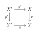
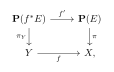
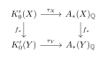

Cohomology of Proper and Projective Schemes
Intersection Theory over Smooth Varieties
Intersection Theory over Smooth Varieties
Throughout, k is a field and a variety means a separated scheme of finite type over k. In particular, every variety is noetherian and has finite Krull dimension. We do not assume that a variety is irreducible, reduced, or smooth unless this is stated explicitly. All complexes are cohomologically graded.
For a variety X, let \mathbf D_{\mathrm{qc}}(X) be the derived category of complexes of \mathcal O_X-modules with quasi-coherent cohomology, and let \mathbf D^b_{\mathrm{coh}}(X)\subseteq \mathbf D_{\mathrm{qc}}(X) be the full triangulated subcategory of complexes with bounded coherent cohomology. If E\in\mathbf D^b_{\mathrm{coh}}(X), its support is \operatorname{Supp}(E) \coloneqq \bigcup_{i\in\mathbf Z}\operatorname{Supp}\left(\mathcal H^i(E)\right), a finite union of closed subsets of X. We set \dim\varnothing=-\infty.
Grothendieck Groups
Perfect and coherent complexes
Definition 3.1 (Bounded coherent complex). An object E\in\mathbf D_{\mathrm{qc}}(X) is a bounded coherent complex if every \mathcal H^i(E) is a coherent \mathcal O_X-module and \mathcal H^i(E)=0 for all but finitely many i. These objects form the triangulated category \mathbf D^b_{\mathrm{coh}}(X).
Definition 3.2 (Perfect complex). An object P\in\mathbf D_{\mathrm{qc}}(X) is perfect if every point x\in X has an open neighbourhood U for which P|_U is isomorphic in \mathbf D_{\mathrm{qc}}(U) to a bounded complex 0\longrightarrow E^a\longrightarrow E^{a+1}\longrightarrow\cdots \longrightarrow E^b\longrightarrow 0 of finite-rank locally free \mathcal O_U-modules. The full subcategory of perfect complexes is denoted by \operatorname{Perf}(X).
The condition is local on X. Cones, shifts, direct summands, and derived tensor products of perfect complexes are perfect. Thus \operatorname{Perf}(X) is a thick triangulated subcategory of \mathbf D_{\mathrm{qc}}(X). Since X is noetherian, a perfect complex has bounded coherent cohomology, so there is an exact fully faithful inclusion \begin{equation} \operatorname{Perf}(X)\hookrightarrow\mathbf D^b_{\mathrm{coh}}(X). \end{equation}
Definition 3.3 (Grothendieck group of a triangulated category). If \mathcal T is an essentially small triangulated category, its Grothendieck group K_0(\mathcal T) is the free abelian group on isomorphism classes [E] of objects, modulo the relations [B]=[A]+[C] for all distinguished triangles A\to B\to C\to A[1] in \mathcal T. Consequently [E[1]]=-[E].
Definition 3.4 (The groups K_0 and G_0). For a variety X, set K_0(X)\coloneqq K_0\left(\operatorname{Perf}(X)\right), G_0(X)\coloneqq K_0\left(\mathbf D^b_{\mathrm{coh}}(X)\right). The inclusion induces the Cartan homomorphism \begin{equation} c_X:K_0(X)\longrightarrow G_0(X),[P]\longmapsto[P]. \end{equation}
One may equivalently define G_0(X) from coherent sheaves: it is generated by symbols [\mathcal F], \mathcal F\in\operatorname{Coh}(X), modulo [\mathcal F]=[\mathcal F']+[\mathcal F''] for every short exact sequence 0\to\mathcal F'\to\mathcal F\to\mathcal F''\to0. The equivalence between the two presentations is given by the Euler-class formula \begin{equation} [E]=\sum_i(-1)^i[\mathcal H^i(E)] \text{ in }G_0(X). \end{equation} Indeed, the standard truncation triangles prove , and a coherent sheaf is regarded as a complex concentrated in degree zero.
The filtration by support
The filtration that behaves without a shift under arbitrary proper maps is the increasing filtration by the dimension of support.
Definition 3.5 (Dimension filtration). For every integer m, define \begin{align*} F_m^{\mathrm{dim}}G_0(X) &\coloneqq \bigl\langle [E]\;\big|\;E\in\mathbf D^b_{\mathrm{coh}}(X),\ \dim\operatorname{Supp}(E)\le m\bigr\rangle,\\ F_m^{\mathrm{dim}}K_0(X) &\coloneqq \bigl\langle [P]\;\big|\;P\in\operatorname{Perf}(X),\ \dim\operatorname{Supp}(P)\le m\bigr\rangle. \end{align*} Equivalently, the first group is generated by coherent sheaves whose support has dimension at most m.
If d=\dim X, these are finite exhaustive filtrations: \begin{align*} 0=F_{-1}^{\mathrm{dim}}G_0(X) &\subseteq F_0^{\mathrm{dim}}G_0(X) \subseteq\cdots\subseteq F_d^{\mathrm{dim}}G_0(X)=G_0(X),\\ 0=F_{-1}^{\mathrm{dim}}K_0(X) &\subseteq F_0^{\mathrm{dim}}K_0(X) \subseteq\cdots\subseteq F_d^{\mathrm{dim}}K_0(X)=K_0(X). \end{align*} The Cartan map is filtered because it does not change support: \begin{equation} c_X\left(F_m^{\mathrm{dim}}K_0(X)\right) \subseteq F_m^{\mathrm{dim}}G_0(X). \end{equation}
When X is pure of dimension d, the same filtration is often written as a descending topological or codimension filtration: \begin{equation} F_{\mathrm{top}}^pG_0(X) \coloneqq F_{d-p}^{\mathrm{dim}}G_0(X), F_{\mathrm{top}}^pK_0(X) \coloneqq F_{d-p}^{\mathrm{dim}}K_0(X). \end{equation} Thus F_{\mathrm{top}}^p is generated by classes supported in codimension at least p. For a non-pure-dimensional variety, the dimension filtration is the unambiguous primary convention; alternatively, a componentwise coniveau filtration may be used.
The smooth case: K_0(X)\simeq G_0(X)
Theorem 3.1 (Cartan isomorphism for a smooth variety). Let X be a smooth variety over k. Then \operatorname{Perf}(X)=\mathbf D^b_{\mathrm{coh}}(X) as full triangulated subcategories of \mathbf D_{\mathrm{qc}}(X). Consequently the Cartan map c_X:K_0(X)\xrightarrow{\ \sim\ }G_0(X) is an isomorphism. It is an isomorphism of filtered groups for the dimension filtrations, and hence also for the codimension filtrations when X is pure dimensional.
Proof. We already know that every perfect complex belongs to \mathbf D^b_{\mathrm{coh}}(X). It remains to prove the reverse inclusion.
Smoothness over a field implies that every local ring \mathcal O_{X,x} is a regular noetherian local ring. The Auslander–Buchsbaum–Serre theorem gives \operatorname{gldim}(\mathcal O_{X,x})=\dim\mathcal O_{X,x}<\infty. Therefore every finite \mathcal O_{X,x}-module has a finite resolution by finite free modules. Let E\in\mathbf D^b_{\mathrm{coh}}(X). At a fixed point x, the finitely many finite modules \mathcal H^i(E)_x have finite projective dimension. Resolving them and using the standard truncation triangles shows that E_x is represented by a bounded complex of finite free \mathcal O_{X,x}-modules. After shrinking to an open neighbourhood of x, the matrices in this complex lift to maps of finite-rank locally free sheaves, and exactness of the required sequences persists after a further shrinking. Hence E is perfect near x. Since x was arbitrary, E is perfect on X.
Thus the inclusion is an equality and its map on Grothendieck groups is an isomorphism. The support of an object is the same on both sides, so the isomorphism identifies each filtration step. ◻
Remark 3.1 (Global resolutions). Perfectness only requires local finite locally free resolutions, so the proof does not require X to be quasi-projective or to have the resolution property. If X has an ample line bundle, one can instead use Serre twisting to obtain surjections from finite sums of negative twists onto coherent sheaves and then construct global finite locally free resolutions; regularity makes the process terminate.
Proper pushforward
Let f:X\to Y be a proper morphism of varieties. Properness and the standard finiteness theorem give an exact functor \mathbf Rf_*:\mathbf D^b_{\mathrm{coh}}(X)\longrightarrow\mathbf D^b_{\mathrm{coh}}(Y).
Proposition 3.1 (Pushforward on G_0). The derived direct image induces a group homomorphism \begin{equation} f_*^G:G_0(X)\longrightarrow G_0(Y), [E]\longmapsto[\mathbf Rf_*E]. \end{equation} For a coherent sheaf \mathcal F, this is \begin{equation} f_*^G[\mathcal F] =\sum_{i\ge0}(-1)^i[R^if_*\mathcal F]. \end{equation} Moreover, pushforward preserves the dimension filtration: \begin{equation} f_*^G\left(F_m^{\mathrm{dim}}G_0(X)\right) \subseteq F_m^{\mathrm{dim}}G_0(Y)(m\in\mathbf Z). \end{equation}
Proof. A distinguished triangle in \mathbf D^b_{\mathrm{coh}}(X) is sent by \mathbf Rf_* to a distinguished triangle in \mathbf D^b_{\mathrm{coh}}(Y), so the defining relations of the Grothendieck group are preserved. Formula follows from .
Let Z=\operatorname{Supp}(E). Since f is proper, f(Z) is closed, and restriction to Y\setminus f(Z) shows that \operatorname{Supp}\mathcal H^i(\mathbf Rf_*E)\subseteq f(Z) \text{for all }i. The dimension of the image of a finite-type morphism does not exceed the dimension of its source. Thus \dim\operatorname{Supp}(\mathbf Rf_*E)\le\dim f(Z)\le\dim Z. This proves on generators. ◻
Corollary 3.1 (Pushforward on K_0 in the smooth setting). Assume that Y is smooth. Then a proper morphism f:X\to Y induces \begin{equation} f_*^K \coloneqq c_Y^{-1}\circ f_*^G\circ c_X: K_0(X)\longrightarrow K_0(Y). \end{equation} In particular, if X and Y are smooth, then \begin{equation} f_*^K[P]=[\mathbf Rf_*P], \end{equation} and f_*^K preserves the dimension filtration.
Proof. The complex \mathbf Rf_*P lies in \mathbf D^b_{\mathrm{coh}}(Y) by properness. Since Y is smooth, the Cartan map c_Y is an isomorphism and \mathbf D^b_{\mathrm{coh}}(Y)=\operatorname{Perf}(Y), so and are defined. The filtered assertion follows from , the filtered Cartan isomorphism on Y, and . When X is also smooth, c_X is a filtered isomorphism as well. ◻
Remark 3.1 (Why smoothness of the target matters). For a general singular target, proper pushforward need not carry perfect complexes to perfect complexes. Thus is the unconditional proper pushforward, whereas uses the regularity of the target (or, more generally, any hypothesis ensuring that \mathbf Rf_* preserves perfect complexes).
Dimension filtration versus codimension filtration
Suppose now that X and Y are pure dimensional, with d_X=\dim X and d_Y=\dim Y. Reindexing by codimension gives \begin{equation} f_*\left(F_{\mathrm{top}}^pG_0(X)\right) \subseteq F_{\mathrm{top}}^{p+d_Y-d_X}G_0(Y). \end{equation} The same formula holds for K_0 when the relevant Cartan maps are isomorphisms. We use the conventions F_{\mathrm{top}}^q=G_0 for q\le0 and F_{\mathrm{top}}^q=0 for q>d_Y.
It is useful to separate three cases.
If d_X=d_Y (for example, for a dominant generically finite proper map), then f_*(F_{\mathrm{top}}^p)\subseteq F_{\mathrm{top}}^p.
If f is a closed immersion of pure codimension c, then d_Y-d_X=c, and f_*(F_{\mathrm{top}}^p)\subseteq F_{\mathrm{top}}^{p+c}.
If d_X=d_Y+r with r\ge0, then f_*(F_{\mathrm{top}}^p)\subseteq F_{\mathrm{top}}^{p-r}. Thus a positive-dimensional proper map does not in general preserve the same codimension index, even though it always preserves the same dimension index.
More precisely, if a class is represented by a complex supported on Z, then its pushforward is supported on f(Z); this may give a stronger bound than .
Products and module structures
The ring structure on K_0(X)
If P,Q\in\operatorname{Perf}(X), then P\mathbin{\otimes^{\mathbf L}}_{\mathcal O_X}Q is again perfect. Define \begin{equation} [P]\cdot[Q] \coloneqq [P\mathbin{\otimes^{\mathbf L}}_{\mathcal O_X}Q]. \end{equation}
Proposition 3.1. Formula makes K_0(X) a commutative ring with unit [\mathcal O_X].
Proof. Derived tensor product with a perfect complex is an exact functor. Hence, if P'\to P\to P''\to P'[1] is a distinguished triangle, then tensoring with Q produces a distinguished triangle P'\mathbin{\otimes^{\mathbf L}}Q\longrightarrow P\mathbin{\otimes^{\mathbf L}}Q\longrightarrow P''\mathbin{\otimes^{\mathbf L}}Q\longrightarrow(P'\mathbin{\otimes^{\mathbf L}}Q)[1]. Therefore respects the Grothendieck relation in the first variable, and similarly in the second variable. It is consequently a well-defined biadditive product. The associativity, symmetry, and unit isomorphisms for derived tensor product descend to associativity, commutativity, and the identity [\mathcal O_X] on K_0(X). ◻
For any morphism g:X\to Y, derived pullback preserves perfect complexes and defines a unital ring homomorphism \begin{equation} g^*:K_0(Y)\longrightarrow K_0(X), [P]\longmapsto[\mathbf Lg^*P]. \end{equation}
The K_0(X)-module structure on G_0(X)
If P\in\operatorname{Perf}(X) and E\in\mathbf D^b_{\mathrm{coh}}(X), then P\mathbin{\otimes^{\mathbf L}}_{\mathcal O_X}E again has bounded coherent cohomology. Define \begin{equation} [P]\cdot[E] \coloneqq[P\mathbin{\otimes^{\mathbf L}}_{\mathcal O_X}E]. \end{equation}
Proposition 3.1. Formula makes G_0(X) a unital module over the ring K_0(X).
Proof. For a perfect P, the functor P\mathbin{\otimes^{\mathbf L}}- is exact on \mathbf D^b_{\mathrm{coh}}(X), so it respects distinguished triangles and hence the relations defining G_0(X). Exactness in the perfect variable gives the relations from K_0(X). The associativity and unit axioms follow from the corresponding isomorphisms in the derived category. ◻
This use of perfect complexes is essential on a singular scheme: the derived tensor product of two arbitrary objects of \mathbf D^b_{\mathrm{coh}}(X) can have nonzero cohomology in infinitely many negative degrees, so G_0(X) has no such ring structure in general. If X is smooth, however, every bounded coherent complex is perfect. Under c_X:K_0(X)\simeq G_0(X), the module action then agrees with the ring multiplication.
The support estimate \operatorname{Supp}(P\mathbin{\otimes^{\mathbf L}}E)\subseteq\operatorname{Supp}(P)\cap\operatorname{Supp}(E) gives the elementary filtered compatibility \begin{equation} F_m^{\mathrm{dim}}K_0(X)\cdot F_n^{\mathrm{dim}}G_0(X) \subseteq F_{\min\{m,n\}}^{\mathrm{dim}}G_0(X). \end{equation} For a smooth variety, the usual multiplicativity theorem for the topological filtration gives the sharper codimension statement F_{\mathrm{top}}^pK_0(X)\cdot F_{\mathrm{top}}^qK_0(X) \subseteq F_{\mathrm{top}}^{p+q}K_0(X). The latter is the K-theoretic form of the fact that intersection products add codimensions, including the excess-intersection cancellations encoded by the alternating Tor complex.
Construction of Intersection Numbers
The first Chern class of a line bundle
In this section X is a variety and \mathcal L is a line bundle on X. We use the same symbol for a class in K_0(X) and for the endomorphism of G_0(X) induced by the module action.
Definition 3.6 (First Chern class). The first Chern class of \mathcal L in K-theory is \begin{equation} \operatorname{c}_1(\mathcal L) \coloneqq [\mathcal O_X]-[\mathcal L^{\otimes-1}] \in K_0(X). \end{equation} It induces an endomorphism of the abelian group G_0(X) given by \begin{equation} \operatorname{c}_1(\mathcal L):G_0(X)\longrightarrow G_0(X), [E]\longmapsto [E]-[\mathcal L^{\otimes-1}\otimes_{\mathcal O_X}E]. \end{equation} Here the ordinary tensor product may be used because a line bundle is flat; equivalently, the second term is [\mathcal L^{\otimes-1}\mathbin{\otimes^{\mathbf L}}_{\mathcal O_X}E].
For compatibility with the traditional notation in this statement, write G_0(X)_r\coloneqq F_r^{\mathrm{dim}}G_0(X), \operatorname{gr}_rG_0(X) \coloneqq G_0(X)_r/G_0(X)_{r-1}.
We first record the support-theoretic input used in the proof.
Lemma 3.1 (Dévissage and localization). Let X be a variety.
The group G_0(X)_r is generated by the classes [\mathcal O_Z], where Z\subseteq X ranges over integral closed subschemes with \dim Z\le r.
If j:U\hookrightarrow X is open and i:W=X\setminus U\hookrightarrow X is the complementary closed immersion, then G_0(W)\xrightarrow{i_*}G_0(X) \xrightarrow{j^*}G_0(U)\longrightarrow0 is exact.
Proof. For (b), restriction is essentially surjective on coherent sheaves up to extension: every coherent sheaf on U extends to a coherent sheaf on X. If a class restricts to zero on U, the relations witnessing this equality may likewise be extended to X; their failure to be exact is supported on W. Dévissage on W then shows that the kernel of j^* is the image of i_*. This is the localization theorem for G_0.
For (a), let Z be an irreducible component of the support of a coherent sheaf \mathcal F. On some dense open subset U\subseteq Z, the restriction of \mathcal F has a finite generic rank m and is isomorphic to \mathcal O_U^{\oplus m}. By (b), the difference [\mathcal F]-m[\mathcal O_Z] is represented by coherent sheaves supported on Z\setminus U, together with the remaining components of \operatorname{Supp}(\mathcal F). Noetherian induction on the support now expresses [\mathcal F] as an integral linear combination of classes [\mathcal O_T] without increasing the dimension of support. ◻
Proposition 3.1 (Properties of the first Chern class). Let \mathcal L be a line bundle on X.
For every r\ge0, \begin{equation} \operatorname{c}_1(\mathcal L)\cdot G_0(X)_r \subseteq G_0(X)_{r-1}. \end{equation}
For any two line bundles \mathcal L_1 and \mathcal L_2, the endomorphisms \operatorname{c}_1(\mathcal L_1) and \operatorname{c}_1(\mathcal L_2) of G_0(X) commute.
Suppose \mathcal L\simeq\mathcal O_X(D) for an effective Cartier divisor i:D\hookrightarrow X. Then i_*\mathcal O_D is a perfect \mathcal O_X-complex and, for every \alpha\in G_0(X), \begin{equation} \operatorname{c}_1(\mathcal L)\cdot\alpha =[i_*\mathcal O_D]\cdot\alpha =\bigl[i_*\mathcal O_D\mathbin{\otimes^{\mathbf L}}_{\mathcal O_X}E\bigr] \end{equation} whenever E\in\mathbf D^b_{\mathrm{coh}}(X) represents \alpha.
For r\ge0 and \alpha\in G_0(X)_r, the map \begin{equation} \operatorname{Pic}(X)\longrightarrow \operatorname{gr}_{r-1}G_0(X), \mathcal L\longmapsto \operatorname{c}_1(\mathcal L)\cdot\alpha \pmod{G_0(X)_{r-2}} \end{equation} is a group homomorphism.
Proof. For (1), Lemma (a) reduces the assertion to \alpha=[\mathcal O_Z], with Z\subseteq X integral and \dim Z\le r. The line bundle \mathcal L|_Z is trivial on some nonempty open subset U\subseteq Z. Consequently \left. \left([\mathcal O_Z]-[\mathcal L^{\otimes-1}|_Z]\right) \right|_U=0 \text{ in }G_0(U). By Lemma (b), this difference is represented by a class supported on Z\setminus U. Since Z is integral and U is nonempty, \dim(Z\setminus U)\le\dim Z-1\le r-1. After pushforward from Z to X, the difference is precisely \operatorname{c}_1(\mathcal L)\cdot[\mathcal O_Z]. This proves .
For (2), K_0(X) is commutative, and its action on G_0(X) is a module action. Hence \operatorname{c}_1(\mathcal L_1)\cdot \left(\operatorname{c}_1(\mathcal L_2)\cdot\alpha\right) =\left(\operatorname{c}_1(\mathcal L_1)\operatorname{c}_1(\mathcal L_2)\right)\cdot\alpha =\operatorname{c}_1(\mathcal L_2)\cdot \left(\operatorname{c}_1(\mathcal L_1)\cdot\alpha\right).
For (3), the canonical section of \mathcal O_X(D) gives the exact sequence \begin{equation} 0\longrightarrow\mathcal O_X(-D) \longrightarrow\mathcal O_X \longrightarrow i_*\mathcal O_D \longrightarrow0. \end{equation} Since \mathcal O_X(-D)=\mathcal L^{\otimes-1}, the two-term locally free complex [\,\mathcal L^{\otimes-1}\longrightarrow\mathcal O_X\,] represents i_*\mathcal O_D. Thus i_*\mathcal O_D is perfect and [i_*\mathcal O_D]=[\mathcal O_X]-[\mathcal L^{\otimes-1}] =\operatorname{c}_1(\mathcal L) \text{ in }K_0(X). Acting on \alpha proves .
For (4), put x=[\mathcal L_1^{\otimes-1}] and y=[\mathcal L_2^{\otimes-1}] in K_0(X). The identity 1-xy=(1-x)+(1-y)-(1-x)(1-y) gives the K-theoretic formal-group formula \begin{equation} \operatorname{c}_1(\mathcal L_1\otimes\mathcal L_2) =\operatorname{c}_1(\mathcal L_1)+\operatorname{c}_1(\mathcal L_2) -\operatorname{c}_1(\mathcal L_1)\operatorname{c}_1(\mathcal L_2). \end{equation} By (1), applying two first Chern operators to \alpha\in G_0(X)_r gives a class in G_0(X)_{r-2}. Therefore the last term of vanishes in \operatorname{gr}_{r-1}G_0(X), and \operatorname{c}_1(\mathcal L_1\otimes\mathcal L_2)\cdot\alpha \equiv \operatorname{c}_1(\mathcal L_1)\cdot\alpha+ \operatorname{c}_1(\mathcal L_2)\cdot\alpha \pmod{G_0(X)_{r-2}}. Also \operatorname{c}_1(\mathcal O_X)=0, so is a group homomorphism. ◻
Remark 3.1. The identity explains why the first Chern class is additive only after passing to the associated graded group. The quadratic term is not zero in K_0(X) in general, but it lowers the support-dimension filtration by two steps.
Euler characteristic as proper pushforward
We begin with the target of the structure morphism.
Proposition 3.1. For every field k, dimension induces an isomorphism of rings \begin{equation} \dim_k:K_0(k)\xrightarrow{\ \sim\ }\mathbf Z, [V^\bullet]\longmapsto \sum_i(-1)^i\dim_k H^i(V^\bullet). \end{equation} Its inverse sends 1 to [k]. Moreover, G_0(k)=K_0(k) under the Cartan isomorphism.
Proof. A perfect complex over \operatorname{Spec}k is a bounded complex of finite-dimensional k-vector spaces. Since every short exact sequence of vector spaces splits, such a complex is quasi-isomorphic to the direct sum of its cohomology spaces, placed in their respective degrees, together with a contractible complex. Hence in K_0(k), [V^\bullet]=\sum_i(-1)^i[H^i(V^\bullet)] =\left(\sum_i(-1)^i\dim_kH^i(V^\bullet)\right)[k]. Thus [k] generates K_0(k), and dimension gives an isomorphism of abelian groups with inverse n\mapsto n[k]. The equality \dim_k(V\otimes_kW)=\dim_k(V)\dim_k(W) shows that it is a ring isomorphism. Finally, \operatorname{Spec}k is smooth, so the Cartan isomorphism identifies G_0(k) with K_0(k). ◻
Definition 3.7 (Euler characteristic). Let X be proper over k, let p:X\to\operatorname{Spec}k be its structure morphism, and let E\in\mathbf D^b_{\mathrm{coh}}(X). The Euler characteristic of E is \begin{equation} \chi(X,E) \coloneqq \sum_i(-1)^i\dim_k\mathbb H^i(X,E). \end{equation} The sum is finite because \mathbf R\Gamma(X,E) is a bounded complex with finite-dimensional cohomology.
Proposition 3.1 (Euler characteristic is pushforward). Under the isomorphism , the Euler-characteristic homomorphism is the composite \begin{equation} G_0(X)\xrightarrow{\ p_*^G\ }G_0(k)=K_0(k) \xrightarrow{\ \dim_k\ }\mathbf Z. \end{equation} Equivalently, p_*^G[E]=[\mathbf R\Gamma(X,E)] \quad\longleftrightarrow\quad \chi(X,E)\in\mathbf Z. If X is smooth and proper, the filtered Cartan isomorphism identifies this map with the proper pushforward p_*^K:K_0(X)\to K_0(k)\simeq\mathbf Z.
Proof. By definition of proper pushforward, p_*^G[E]=[\mathbf Rp_*E]=[\mathbf R\Gamma(X,E)]. Applying Proposition gives exactly the alternating sum in . The smooth case follows from the Cartan isomorphisms for X and \operatorname{Spec}k. ◻
Proposition 3.1 (Properties of Euler characteristic). Let X be proper over k and let E,F\in\mathbf D^b_{\mathrm{coh}}(X).
For every n\in\mathbf Z, \begin{equation} \chi(X,E[n])=(-1)^n\chi(X,E). \end{equation}
Euler characteristic is additive in distinguished triangles: if E'\to E\to E''\to E'[1] is distinguished, then \begin{equation} \chi(X,E)=\chi(X,E')+\chi(X,E''). \end{equation}
Euler characteristic may be computed from the cohomology sheaves: \begin{equation} \chi(X,E)= \sum_j(-1)^j\chi\left(X,\mathcal H^j(E)\right). \end{equation}
It is invariant under extension of the base field. More precisely, if k'/k is a field extension, q:X_{k'}=X\times_k k'\to X, and E_{k'}=\mathbf Lq^*E, then \begin{equation} \chi_{k'}(X_{k'},E_{k'})=\chi_k(X,E). \end{equation}
Euler characteristic is multiplicative for tensor products over the field. If V,W\in\operatorname{Perf}(k), then \begin{equation} \chi_k(V\mathbin{\otimes^{\mathbf L}}_kW)=\chi_k(V)\chi_k(W). \end{equation} More generally, if Y is proper over k and G\in\mathbf D^b_{\mathrm{coh}}(Y), then \begin{equation} \chi\left(X\times_kY, E\mathbin{\boxtimes^{\mathbf L}_k}G\right) =\chi(X,E)\chi(Y,G). \end{equation}
Let f:X\to Y be proper, assume Y is proper over k, let P\in\operatorname{Perf}(Y), and let E\in\mathbf D^b_{\mathrm{coh}}(X). The projection formula gives \begin{equation} \chi\left(X,\mathbf Lf^*P\mathbin{\otimes^{\mathbf L}}E\right) =\chi\left(Y,P\mathbin{\otimes^{\mathbf L}}\mathbf Rf_*E\right). \end{equation} In particular, for the structure morphism p:X\to\operatorname{Spec}k and V\in\operatorname{Perf}(k), \begin{equation} \chi\left(X,\mathbf Lp^*V\mathbin{\otimes^{\mathbf L}}E\right) =\chi_k(V)\chi(X,E). \end{equation}
Proof. The identity [E[n]]=(-1)^n[E] in G_0(X) proves (1), while (2) follows because proper pushforward is a homomorphism on the Grothendieck group. Alternatively, both statements follow by taking the alternating dimension of the long exact hypercohomology sequence.
The standard truncation triangles give [E]=\sum_j(-1)^j[\mathcal H^j(E)] \text{ in }G_0(X). Applying p_*^G and then \dim_k proves (3).
For (4), flat proper base change gives a canonical quasi-isomorphism \begin{equation} \mathbf R\Gamma(X,E)\mathbin{\otimes^{\mathbf L}}_k k' \simeq \mathbf R\Gamma(X_{k'},\mathbf Lq^*E). \end{equation} Since \dim_{k'}(H^i\mathbf R\Gamma(X,E)\otimes_k k') =\dim_k\mathbb H^i(X,E), taking alternating dimensions proves .
Statement (5) for complexes over k follows because K_0(k)\simeq\mathbf Z is a ring isomorphism. The derived Künneth isomorphism \mathbf R\Gamma\left(X\times_kY, E\mathbin{\boxtimes^{\mathbf L}_k}G\right) \simeq \mathbf R\Gamma(X,E)\mathbin{\otimes^{\mathbf L}}_k\mathbf R\Gamma(Y,G) then gives .
Finally, the derived projection formula gives \mathbf Rf_*\left(\mathbf Lf^*P\mathbin{\otimes^{\mathbf L}}E\right) \simeq P\mathbin{\otimes^{\mathbf L}}\mathbf Rf_*E. Pushing both sides from Y to \operatorname{Spec}k proves . Taking Y=\operatorname{Spec}k and using proves . ◻
Remark 3.1 (Two necessary qualifications). Base-field independence in means invariance after scalar extension X\mapsto X_{k'}. It does not mean restriction of scalars: if K/k is finite and a finite-dimensional K-vector space is merely viewed as a k-vector space, its dimension is multiplied by [K:k].
Likewise, tensor multiplicativity holds over the point and for external tensor products, as in and . In general it is false that \chi(X,E\mathbin{\otimes^{\mathbf L}}F)=\chi(X,E)\chi(X,F). For example, on X=\mathbf P^1_k one has \chi(\mathcal O(1))=2 but \chi(\mathcal O(2))=3, so \chi(\mathcal O(1)\otimes\mathcal O(1))=3\ne4.
Snapper polynomials
Let X be proper over k, let \alpha\in G_0(X), and let \mathcal L_1,\ldots,\mathcal L_t be line bundles on X. For \mathbf m=(m_1,\ldots,m_t)\in\mathbb Z^t, the tensor product of the line bundles acts on \alpha through the K_0(X)-module structure on G_0(X). We abbreviate by \chi(\beta) the image of \beta\in G_0(X) under the Euler-characteristic homomorphism G_0(X)\to\mathbb Z.
Definition 3.8 (Euler–Snapper function). The Euler–Snapper function associated with (\alpha;\mathcal L_1,\ldots,\mathcal L_t) is \begin{equation} \begin{aligned} S_{\alpha;\mathcal L_1,\ldots,\mathcal L_t} :\mathbb Z^t&\longrightarrow\mathbb Z,\\ (m_1,\ldots,m_t)&\longmapsto \chi\left( \mathcal L_1^{\otimes m_1}\otimes\cdots\otimes \mathcal L_t^{\otimes m_t}\cdot\alpha \right). \end{aligned} \end{equation} If E\in\mathbf D^b_{\mathrm{coh}}(X) represents \alpha, the value on the right means \chi\left(X, \mathcal L_1^{\otimes m_1}\otimes\cdots\otimes \mathcal L_t^{\otimes m_t}\otimes^{\mathbf L}_{\mathcal O_X}E \right).
For i\ge0 and m\in\mathbb Z, use the generalized binomial polynomial \begin{equation} \binom{m+i-1}{i} \coloneqq \begin{cases} 1,&i=0,\\ \displaystyle\frac{m(m+1)\cdots(m+i-1)}{i!},&i>0. \end{cases} \end{equation} This definition is valid for negative as well as positive integers m.
Theorem 3.1 (Snapper’s formula). Let X be a proper k-scheme, let t\ge0, and let \mathcal L_1,\ldots,\mathcal L_t be line bundles on X. For every m_1,\ldots,m_t\in\mathbb Z and every \alpha\in G_0(X), \begin{equation} \begin{aligned} &\chi\left( \mathcal L_1^{\otimes m_1}\otimes\cdots\otimes \mathcal L_t^{\otimes m_t}\cdot\alpha \right)\\ &\quad= \sum_{i_1,\ldots,i_t\ge0} \chi\left( \operatorname{c}_1(\mathcal L_1)^{i_1}\cdots \operatorname{c}_1(\mathcal L_t)^{i_t}\cdot\alpha \right) \prod_{j=1}^t\binom{m_j+i_j-1}{i_j}. \end{aligned} \end{equation} The sum is finite. More precisely, if \alpha\in F_r^{\mathrm{dim}}G_0(X), then every term with i_1+\cdots+i_t>r vanishes. Consequently the Euler–Snapper function is an integer-valued polynomial of total degree at most r.
Proof. Let u_j\coloneqq\operatorname{c}_1(\mathcal L_j) =1-[\mathcal L_j^{\otimes-1}](1\le j\le t), viewed as commuting endomorphisms of G_0(X). Since 1-u_j=[\mathcal L_j^{\otimes-1}], whose inverse in K_0(X) is [\mathcal L_j], one has \begin{equation} [\mathcal L_j^{\otimes m_j}] =(1-u_j)^{-m_j}. \end{equation}
The formal binomial identity \begin{equation} (1-u)^{-m} =\sum_{i\ge0}\binom{m+i-1}{i}u^i \end{equation} holds for every m\in\mathbb Z. Although the series is formal, it becomes a finite identity after it acts on \alpha. Indeed, each first Chern operator lowers the support-dimension filtration by one, so \begin{equation} u_1^{i_1}\cdots u_t^{i_t}\alpha=0 \text{ if }i_1+\cdots+i_t>r. \end{equation} Thus we may multiply the finitely truncated versions of for u_1,\ldots,u_t and obtain \mathcal L_1^{\otimes m_1}\otimes\cdots\otimes \mathcal L_t^{\otimes m_t}\cdot\alpha =\sum_{i_1,\ldots,i_t\ge0} \left(\prod_{j=1}^t\binom{m_j+i_j-1}{i_j}\right) u_1^{i_1}\cdots u_t^{i_t}\alpha in G_0(X). Applying the Euler-characteristic homomorphism gives . Finally, \binom{m+i-1}{i} is a polynomial of degree i in m, and only indices of total size at most r occur. Hence the total degree is at most r. ◻
Definition 3.9 (Snapper polynomial). The numerical polynomial represented by either side of is called the Snapper polynomial of \alpha with respect to \mathcal L_1,\ldots,\mathcal L_t and is denoted by P_{\alpha;\mathcal L_1,\ldots,\mathcal L_t} (m_1,\ldots,m_t). For a complex E\in\mathbf D^b_{\mathrm{coh}}(X), we also write P_{E;\mathcal L_1,\ldots,\mathcal L_t} for the polynomial associated with \alpha=[E].
Intersection numbers from Chern operators
Definition 3.10 (Intersection number). Let X be proper over k, let r\ge0, let \alpha\in F_r^{\mathrm{dim}}G_0(X), and let \mathcal L_1,\ldots,\mathcal L_r be line bundles on X. Their intersection number against \alpha is \begin{equation} (\mathcal L_1\cdots\mathcal L_r\cdot\alpha)_X \coloneqq \chi\left( \operatorname{c}_1(\mathcal L_1)\cdots\operatorname{c}_1(\mathcal L_r)\cdot\alpha \right)\in\mathbb Z. \end{equation} When X is pure of dimension r and \alpha=[\mathcal O_X], set (\mathcal L_1\cdots\mathcal L_r)_X \coloneqq (\mathcal L_1\cdots\mathcal L_r\cdot[\mathcal O_X])_X. For r=0, the empty intersection number is \chi(\alpha).
Theorem 3.1 (The highest part of the Snapper polynomial). Let X be proper over k, let \alpha\in F_r^{\mathrm{dim}}G_0(X), and let \mathcal L_1,\ldots,\mathcal L_t be line bundles on X. The homogeneous part of total degree r of the Snapper polynomial is \begin{equation} \sum_{i_1+\cdots+i_t=r} \frac{ (\mathcal L_1^{[i_1]}\cdots \mathcal L_t^{[i_t]}\cdot\alpha)_X }{i_1!\cdots i_t!} m_1^{i_1}\cdots m_t^{i_t}, \end{equation} where \begin{equation} (\mathcal L_1^{[i_1]}\cdots \mathcal L_t^{[i_t]}\cdot\alpha)_X \coloneqq \chi\left( \operatorname{c}_1(\mathcal L_1)^{i_1}\cdots \operatorname{c}_1(\mathcal L_t)^{i_t}\cdot\alpha \right). \end{equation} In particular:
if t=r, the coefficient of m_1\cdots m_r is (\mathcal L_1\cdots\mathcal L_r\cdot\alpha)_X;
in one variable, \begin{equation} P_{\alpha;\mathcal L}(m) =\frac{(\mathcal L^{[r]}\cdot\alpha)_X}{r!}m^r +\text{terms of degree at most }r-1. \end{equation}
The displayed degree-r part may vanish, in which case the actual degree of the Snapper polynomial is smaller than r.
Proof. In Snapper’s formula, a term indexed by (i_1,\ldots,i_t) has total degree at most i_1+\cdots+i_t, and it vanishes if this sum is larger than r. Moreover, \binom{m+i-1}{i}=\frac{m^i}{i!} +\text{terms of degree at most }i-1. Therefore only the indices with i_1+\cdots+i_t=r contribute to the homogeneous degree-r part, and their leading terms give . The two special cases follow by reading off the indicated coefficients. ◻
Proposition 3.1 (Integral multilinearity). Let X be proper over k. For fixed \alpha\in F_r^{\mathrm{dim}}G_0(X), the intersection pairing \begin{equation} \operatorname{Pic}(X)^r\longrightarrow\mathbb Z, (\mathcal L_1,\ldots,\mathcal L_r) \longmapsto (\mathcal L_1\cdots\mathcal L_r\cdot\alpha)_X \end{equation} is symmetric and \mathbb Z-multilinear, where the group operation on \operatorname{Pic}(X) is tensor product. It is also additive in \alpha. In particular, for a_1,\ldots,a_r\in\mathbb Z, \begin{equation} (\mathcal L_1^{\otimes a_1}\cdots \mathcal L_r^{\otimes a_r}\cdot\alpha)_X =a_1\cdots a_r (\mathcal L_1\cdots\mathcal L_r\cdot\alpha)_X. \end{equation}
Proof. Symmetry follows because first Chern operators commute. For additivity in the first line-bundle variable, use \begin{equation} \operatorname{c}_1(\mathcal L\otimes\mathcal M) =\operatorname{c}_1(\mathcal L)+\operatorname{c}_1(\mathcal M) -\operatorname{c}_1(\mathcal L)\operatorname{c}_1(\mathcal M). \end{equation} After multiplication by the other r-1 first Chern operators, the last term contains r+1 Chern operators acting on a class in F_r^{\mathrm{dim}}G_0(X); hence it is zero. Applying \chi gives ((\mathcal L\otimes\mathcal M)\mathcal L_2\cdots \mathcal L_r\cdot\alpha)_X = (\mathcal L\mathcal L_2\cdots \mathcal L_r\cdot\alpha)_X + (\mathcal M\mathcal L_2\cdots \mathcal L_r\cdot\alpha)_X. Symmetry gives additivity in every variable, including negative tensor powers. Additivity in \alpha follows from the additivity of the K_0(X)-action and of Euler characteristic. ◻
Comparison with the definition by lengths
The Chern-operator definition contains the classical local intersection multiplicities. The complex formulation also records the higher Tor terms when an intersection is not Tor-independent.
Theorem 3.1 (Derived length formula). Let X be proper over k, let E\in\mathbf D^b_{\mathrm{coh}}(X) have support of dimension at most r, and let D_1,\ldots,D_r be effective Cartier divisors with \mathcal L_j=\mathcal O_X(D_j). Suppose the complex \begin{equation} K\coloneqq E\otimes^{\mathbf L}_{\mathcal O_X}\mathcal O_{D_1} \otimes^{\mathbf L}_{\mathcal O_X}\cdots \otimes^{\mathbf L}_{\mathcal O_X}\mathcal O_{D_r} \end{equation} has zero-dimensional support. Then \begin{equation} (\mathcal L_1\cdots\mathcal L_r\cdot[E])_X =\sum_{x\in\operatorname{Supp}(K)}[k(x):k] \sum_q(-1)^q \operatorname{length}_{\mathcal O_{X,x}} \mathcal H^q(K)_x. \end{equation}
In particular, suppose X is smooth and pure of dimension r, take E=\mathcal O_X, and assume that the scheme-theoretic intersection Z=D_1\cap\cdots\cap D_r is zero dimensional. Then the local equations of D_1,\ldots,D_r form a regular sequence and \begin{equation} (\mathcal O_X(D_1)\cdots\mathcal O_X(D_r))_X =\sum_{x\in Z}[k(x):k] \operatorname{length}_{\mathcal O_{X,x}}\mathcal O_{Z,x}. \end{equation} If k is algebraically closed, the residue-degree factors are all equal to 1, so this is the usual sum of local lengths.
Proof. The effective-Cartier-divisor identity gives \operatorname{c}_1(\mathcal L_j)=[i_{j*}\mathcal O_{D_j}]\text{ in }K_0(X). Here i_j:D_j\hookrightarrow X is the closed immersion, and we suppress i_{j*} when writing the derived tensor product on X. Consequently \operatorname{c}_1(\mathcal L_1)\cdots\operatorname{c}_1(\mathcal L_r)\cdot[E]=[K]\text{in }G_0(X). The cohomology sheaves of K have finite length. For any finite-length coherent sheaf M on a proper k-scheme, \begin{equation} \chi(M)=\dim_kH^0(X,M) =\sum_{x\in\operatorname{Supp}(M)}[k(x):k] \operatorname{length}_{\mathcal O_{X,x}}M_x. \end{equation} Using [K]=\sum_q(-1)^q[\mathcal H^q(K)] and applying proves .
For the final statement, each D_j is locally cut out by one non-zero-divisor. Because the regular local rings of the smooth scheme X are Cohen–Macaulay, an ideal generated by r elements and having codimension r is generated by a regular sequence. Hence the derived tensor product in is quasi-isomorphic to \mathcal O_Z in degree zero. Formula therefore reduces to . This proves that the Chern-operator definition agrees with the classical definition by lengths. ◻
Degree of a proper morphism and the projection formula
Definition 3.11 (Degree of a proper morphism). Let f:X\to Y be a proper morphism between integral varieties of the same dimension. If f is dominant, then it is generically finite, and its degree is \begin{equation} \deg(f)\coloneqq[k(X):k(Y)]. \end{equation} If f is not dominant, we use the cycle-theoretic convention \deg(f)=0; equivalently, the top-dimensional pushforward of [X] is zero. The field degree includes both separable and inseparable degrees.
Proposition 3.1 (Intersection projection formula). Let f:X\to Y be a proper morphism of proper k-schemes, let \alpha\in F_r^{\mathrm{dim}}G_0(X), and let \mathcal L_1,\ldots,\mathcal L_r be line bundles on Y. Then \begin{equation} (f^*\mathcal L_1\cdots f^*\mathcal L_r\cdot\alpha)_X = (\mathcal L_1\cdots\mathcal L_r\cdot f_*^G\alpha)_Y. \end{equation}
Proof. For a line bundle \mathcal L on Y, \begin{equation} \operatorname{c}_1(f^*\mathcal L)=f^*\operatorname{c}_1(\mathcal L)\text{ in }K_0(X). \end{equation} The derived projection formula therefore gives, for every \beta\in G_0(X), f_*^G\left(\operatorname{c}_1(f^*\mathcal L)\cdot\beta\right) =\operatorname{c}_1(\mathcal L)\cdot f_*^G\beta. Iterating this identity for \mathcal L_1,\ldots,\mathcal L_r and then pushing from Y to \operatorname{Spec}k proves . ◻
Theorem 3.1 (Degree formula for pulled-back intersections). Let f:X\to Y be a proper morphism of integral proper k-varieties of the same dimension n, and let d=\deg(f), with the convention of Definition . For line bundles \mathcal L_1,\ldots,\mathcal L_n on Y, \begin{equation} (f^*\mathcal L_1\cdots f^*\mathcal L_n)_X =d(\mathcal L_1\cdots\mathcal L_n)_Y. \end{equation}
Proof. Assume first that f is dominant. Let \eta be the generic point of Y. At \eta, the derived pushforward of \mathcal O_X is the k(Y)-vector space k(X) concentrated in degree zero, and it has dimension d. Localization at the generic point therefore gives \begin{equation} f_*^G[\mathcal O_X]-d[\mathcal O_Y] \in F_{n-1}^{\mathrm{dim}}G_0(Y). \end{equation} Applying n first Chern operators to the difference in gives zero, because these operators lower the filtration by n steps. Hence (\mathcal L_1\cdots\mathcal L_n\cdot f_*^G[\mathcal O_X])_Y =d(\mathcal L_1\cdots\mathcal L_n)_Y. The left side equals (f^*\mathcal L_1\cdots f^*\mathcal L_n)_X by .
If f is not dominant, f_*^G[\mathcal O_X] is supported on the proper closed subset f(X) and belongs to F_{n-1}^{\mathrm{dim}}G_0(Y). The same argument makes the left side zero, which agrees with the convention d=0. ◻
The Hilbert polynomial of a coherent complex
Definition 3.12 (Hilbert polynomial of a complex). Let X be a projective k-scheme, let \mathcal O_X(1) be an ample line bundle, and let E\in\mathbf D^b_{\mathrm{coh}}(X). The Hilbert polynomial of E with respect to \mathcal O_X(1) is \begin{equation} P_E(m) \coloneqq \chi\left(X,E(m)\right), E(m)\coloneqq E\otimes^{\mathbf L}_{\mathcal O_X}\mathcal O_X(m). \end{equation} Equivalently, P_E is the one-variable Snapper polynomial P_{[E];\mathcal O_X(1)}.
The definition is meaningful for every m\in\mathbb Z, not only for m\gg0. Snapper’s theorem proves that the function in is represented by a unique numerical polynomial in \mathbb Q[m] which takes integral values at every integer.
Proposition 3.1 (Basic properties of the Hilbert polynomial). Let E,E',E''\in\mathbf D^b_{\mathrm{coh}}(X). If E\not\simeq0, put r=\dim\operatorname{Supp}(E); if E\simeq0, put r=0 and use the convention \deg0=-\infty.
One has \begin{equation} \deg P_E\le r. \end{equation}
Shifts change the sign according to \begin{equation} P_{E[n]}(m)=(-1)^nP_E(m). \end{equation}
If E'\to E\to E''\to E'[1] is a distinguished triangle, then \begin{equation} P_E=P_{E'}+P_{E''}. \end{equation}
The polynomial is the alternating sum of the Hilbert polynomials of the cohomology sheaves: \begin{equation} P_E(m)=\sum_q(-1)^qP_{\mathcal H^q(E)}(m). \end{equation}
For m\gg0, \begin{equation} P_E(m)= \sum_q(-1)^q \dim_kH^0\left(X,\mathcal H^q(E)(m)\right). \end{equation}
Its possible degree-r term is \begin{equation} P_E(m)= \frac{ \left(\mathcal O_X(1)^{[r]}\cdot[E]\right)_X }{r!}m^r +\text{terms of degree at most }r-1. \end{equation}
Proof. The class [E] belongs to F_r^{\mathrm{dim}}G_0(X). The degree bound and the leading-term formula are therefore the one-variable cases of Snapper’s formula and .
The identities [E[n]]=(-1)^n[E], [E]=[E']+[E''], [E]=\sum_q(-1)^q[\mathcal H^q(E)] hold in G_0(X). Tensoring with \mathcal O_X(m) and applying the Euler characteristic proves –. Finally, Serre vanishing gives H^p\left(X,\mathcal H^q(E)(m)\right)=0(p>0,\ m\gg0) for the finitely many nonzero cohomology sheaves of E. Applying the cohomology-sheaf formula for Euler characteristic gives . ◻
Proposition 3.1 (The degree for a coherent sheaf). The inequality in may be strict for a complex: the top-dimensional contributions of its cohomology sheaves may cancel in G_0(X). For a nonzero coherent sheaf \mathcal F, no such virtual cancellation occurs, and \deg P_{\mathcal F} =\dim\operatorname{Supp}(\mathcal F). Moreover, the leading coefficient of P_{\mathcal F} is positive.
Proof. Choose a>0 such that \mathcal O_X(a) is very ample and use it to embed X into projective space. For m\gg0, Serre vanishing identifies P_{\mathcal F}(am) with the Hilbert function of the finitely generated graded module associated with \mathcal F. The Hilbert–Serre theorem says that this function has degree \dim\operatorname{Supp}(\mathcal F) and positive leading coefficient. Replacing m by am does not change the degree of a polynomial and multiplies its leading coefficient by a positive number. The assertion follows. ◻
Definition 3.13 (Dimension and degree from the Hilbert polynomial). Let 0\ne\mathcal F\in\operatorname{Coh}(X), and write P_{\mathcal F}(m) =\frac{d_{\mathcal F}}{r!}m^r +\text{terms of degree at most }r-1, r=\dim\operatorname{Supp}(\mathcal F). The integer d_{\mathcal F}>0 is the degree of \mathcal F with respect to \mathcal O_X(1). For a pure n-dimensional projective scheme X, set \begin{equation} \deg_{\mathcal O(1)}(X) \coloneqq \deg_{\mathcal O(1)}(\mathcal O_X) =\left(\mathcal O_X(1)^{[n]}\right)_X. \end{equation} Thus \begin{equation} P_X(m) \coloneqq P_{\mathcal O_X}(m) =\frac{\deg_{\mathcal O(1)}(X)}{n!}m^n +\text{terms of degree at most }n-1. \end{equation}
The last equality in is precisely the leading-term theorem for the Snapper polynomial. When n sufficiently general hyperplane sections meet in a zero-dimensional scheme, the derived length formula identifies this integer with the usual weighted sum of local lengths.
Arithmetic genus
Definition 3.14 (Arithmetic genus). Let X be a nonempty proper k-scheme of pure dimension n. Its arithmetic genus is \begin{equation} p_a(X) \coloneqq (-1)^n\left(\chi(X,\mathcal O_X)-1\right). \end{equation} If X is projective and \mathcal O_X(1) is ample, then equivalently \begin{equation} p_a(X)=(-1)^n\left(P_X(0)-1\right). \end{equation}
Proposition 3.1. The two expressions and agree and are independent of the chosen ample line bundle. Explicitly, \begin{equation} p_a(X)= (-1)^n\left( \sum_i(-1)^i\dim_kH^i(X,\mathcal O_X)-1 \right). \end{equation}
Proof. By definition of the Hilbert polynomial, P_X(0) =\chi\left(X,\mathcal O_X(0)\right) =\chi(X,\mathcal O_X). This value contains no reference to the ample line bundle. Expanding the Euler characteristic as the alternating sum of coherent cohomology dimensions gives . ◻
For a proper curve C, the definition becomes p_a(C)=1-\chi(C,\mathcal O_C). If C is geometrically integral, then H^0(C,\mathcal O_C)=k, and hence p_a(C)=\dim_kH^1(C,\mathcal O_C).
The relative K-class of a coherent complex
Let f:X\to S be proper and flat, with S locally noetherian. A complex E\in\mathbf D^b_{\mathrm{coh}}(X) will be called perfect over S if it has finite Tor-amplitude over S. This means that locally on X there are integers a\le b such that \mathcal H^i\left( E\otimes^{\mathbf L}_{\mathcal O_X}\mathbf Lf^*M \right)=0 (i\notin[a,b]) for every quasi-coherent \mathcal O_S-module M. A bounded complex of coherent sheaves flat over S is perfect over S.
For a perfect complex Q on S, define its virtual rank at s\in S by \begin{equation} \operatorname{vir.rank}_s(Q) \coloneqq \sum_i(-1)^i \dim_{k(s)} \mathcal H^i\left(\mathbf Li_s^*Q\right), \end{equation} where i_s:\operatorname{Spec}k(s)\to S.
Lemma 3.1 (Virtual rank is locally constant). The function s\longmapsto\operatorname{vir.rank}_s(Q) is locally constant on S.
Proof. Locally on S, represent Q by a bounded complex of finite-rank locally free modules [\,0\to Q^a\to\cdots\to Q^b\to0\,]. The Euler characteristic of its fiber is the alternating sum of the dimensions of its terms. Therefore \operatorname{vir.rank}_s(Q) =\sum_{j=a}^b(-1)^j\operatorname{rank}_s(Q^j), a finite alternating sum of locally constant rank functions. ◻
Theorem 3.1 (Euler characteristic as the rank of relative pushforward). Let f:X\to S be proper and flat, and let E\in\mathbf D^b_{\mathrm{coh}}(X) be perfect over S. For s\in S, put X_s=X\times_S\operatorname{Spec}k(s), E_s=\mathbf L\iota_s^*E. Then \mathbf Rf_*E is perfect on S, its formation commutes with passage to the fiber, and \begin{equation} \chi(X_s,E_s) =\operatorname{vir.rank}_s(\mathbf Rf_*E). \end{equation} Consequently s\mapsto\chi(X_s,E_s) is locally constant.
Proof. Proper finiteness for a complex perfect over the base gives \mathbf Rf_*E\in\operatorname{Perf}(S). Perfect base change gives a quasi-isomorphism \mathbf Li_s^*\mathbf Rf_*E \simeq \mathbf R\Gamma(X_s,E_s). Taking the alternating dimension of cohomology proves . Local constancy follows from Lemma . ◻
Hilbert polynomials in a projective flat family
Theorem 3.1 (Local constancy of the fiberwise Hilbert polynomial). Let f:X\to S be projective and flat, let \mathcal O_X(1) be relatively ample, and let E\in\mathbf D^b_{\mathrm{coh}}(X) be perfect over S. For s\in S, define \begin{equation} P_{E_s}(m) \coloneqq \chi\left(X_s,E_s(m)\right). \end{equation} Then s\mapsto P_{E_s} is locally constant. In particular, the polynomial is independent of s when S is connected.
Proof. For each m\in\mathbb Z, the twist E(m)=E\otimes^{\mathbf L}_{\mathcal O_X}\mathcal O_X(m) remains perfect over S. Applying Theorem gives \begin{equation} P_{E_s}(m) = \operatorname{vir.rank}_s\left( \mathbf Rf_*E(m) \right). \end{equation} Thus, for each fixed integer m, the value P_{E_s}(m) is locally constant in s.
Fix s_0\in S. After shrinking around s_0, the dimensions of the fibers X_s are bounded by a single integer N. By Proposition , \deg P_{E_s}\le\dim\operatorname{Supp}(E_s)\le N. A polynomial of degree at most N is determined by its N+1 values at m=0,1,\ldots,N. Each of these finitely many values is locally constant by . Intersecting the corresponding neighbourhoods of s_0 shows that the entire polynomial P_{E_s} is constant near s_0. ◻
Corollary 3.1 (Additivity in families). If E'\to E\to E''\to E'[1] is a distinguished triangle of complexes perfect over S, then on every fiber P_{E_s}=P_{E'_s}+P_{E''_s}. Moreover, P_{E_s} =\sum_q(-1)^qP_{\mathcal H^q(E_s)}.
Proof. Derived pullback to X_s preserves distinguished triangles. Apply Proposition on the fiber. ◻
Corollary 3.1 (Dimension, degree, and arithmetic genus of the fibers). Let f:X\to S be projective and flat with nonempty pure-dimensional fibers, and let \mathcal O_X(1) be relatively ample. On every connected component of S, the following are constant:
the dimension n=\dim X_s;
the degree \begin{equation} \deg_{\mathcal O(1)}(X_s) =\left(\mathcal O_{X_s}(1)^{[n]}\right)_{X_s}; \end{equation}
the arithmetic genus \begin{equation} p_a(X_s) =(-1)^n\left(\chi(X_s,\mathcal O_{X_s})-1\right). \end{equation}
Proof. Flatness makes \mathcal O_X perfect over S, so Theorem shows that P_{X_s}(m)=\chi(X_s,\mathcal O_{X_s}(m)) is constant on each connected component. For a nonempty projective scheme, the degree of its Hilbert polynomial is its dimension. Hence n is constant. Its leading term is \frac{\deg_{\mathcal O(1)}(X_s)}{n!}m^n, so the degree of the fiber is constant as well. Finally, p_a(X_s)=(-1)^n(P_{X_s}(0)-1). Both n and the value P_{X_s}(0) are constant, proving the assertion about arithmetic genus. ◻
Remark 3.1. The proof uses no separate semicontinuity argument for the individual cohomology dimensions. Those dimensions may jump even in a flat family. Their alternating sum is controlled by the virtual rank of the perfect pushforward, and the finitely many Euler characteristics in determine the entire Hilbert polynomial.
Cycles and Chow groups
Throughout this section, a variety means a separated scheme of finite type over the fixed field k. A subvariety of X means an integral closed subscheme of X. We first construct Chow groups for an arbitrary variety; smoothness will only be imposed when it is needed, notably in the comparison with the Picard group.
Cycles and rational equivalence
Definition 3.15 (Groups of cycles). For an integer r\geq 0, the group of r-dimensional cycles on X is the free abelian group Z_r(X) \coloneqq \bigoplus_{\substack{V\subseteq X\text{ a subvariety}\\ \dim V=r}} \mathbb Z[V]. We put Z_r(X)=0 for r<0. Thus an r-cycle is a finite sum \alpha=\sum_V n_V[V] with n_V\in\mathbb Z.
If X is pure of dimension n, we also use the codimension notation Z^p(X)\coloneqq Z_{n-p}(X).
The multiplicities in a scheme-theoretic inverse image will be encoded by the following fundamental cycle. If T is a noetherian scheme and d is the maximal dimension of its irreducible components, set \begin{equation} [T]_d \coloneqq \sum_{\substack{T_i\text{ an irreducible component of }T\\ \dim T_i=d}} \ell_{\mathcal O_{T,\eta_i}} \left(\mathcal O_{T,\eta_i}\right)[T_i], \end{equation} where \eta_i is the generic point of T_i. When all irreducible components have dimension d, we simply write [T].
Let W be an integral variety and let V\subset W be a prime divisor, that is, an integral closed subscheme of codimension one. For g\in k(W)^\times, write g=a/b in the one-dimensional noetherian local domain A=\mathcal O_{W,\eta_V} and define \begin{equation} \operatorname{ord}_V(g) \coloneqq \ell_A(A/aA)-\ell_A(A/bA). \end{equation} The additivity of length shows that this integer is independent of the chosen expression g=a/b and that \operatorname{ord}_V(gh)=\operatorname{ord}_V(g)+ \operatorname{ord}_V(h). Only finitely many of these integers are nonzero.
Definition 3.16 (Principal divisor and rational equivalence). For g\in k(W)^\times, its principal divisor on W is \operatorname{div}_W(g) \coloneqq \sum_{\substack{V\subset W\\\operatorname{codim}_W(V)=1}} \operatorname{ord}_V(g)[V] \in Z_{\dim W-1}(W). For a variety X, let \operatorname{Rat}_r(X)\subseteq Z_r(X) be the subgroup generated by the cycles i_*\operatorname{div}_W(g), where W\subseteq X is an (r+1)-dimensional subvariety, i:W\hookrightarrow X is the inclusion, and g\in k(W)^\times. Two cycles are rationally equivalent if their difference lies in \operatorname{Rat}_r(X).
Definition 3.17 (Chow groups). The Chow group of r-dimensional cycles on X is \begin{equation} \operatorname{CH}_r(X) \coloneqq Z_r(X)/\operatorname{Rat}_r(X). \end{equation} If X is pure of dimension n, its codimension-p Chow group is \operatorname{CH}^p(X)\coloneqq\operatorname{CH}_{n-p}(X). The class of a cycle \alpha in a Chow group will again be denoted by [\alpha] when no confusion can occur.
Thus \operatorname{CH}_r(X) is Fulton’s group A_r(X), also commonly denoted CH_r(X). At this stage it is only an abelian group. The intersection product that makes \operatorname{CH}^*(X) a ring for smooth X will be constructed later.
Proper pushforward
Let f:X\to Y be a proper morphism. If V\subseteq X is an r-dimensional subvariety, then f(V) is closed and integral. Define \begin{equation} f_*[V] \coloneqq \begin{cases} [k(V):k(f(V))]\,[f(V)],&\dim f(V)=r,\\ 0,&\dim f(V)<r. \end{cases} \end{equation} In the first case the extension of function fields is finite. Extending linearly gives a homomorphism f_*:Z_r(X)\longrightarrow Z_r(Y).
Theorem 3.1 (Proper pushforward on Chow groups). Proper pushforward preserves rational equivalence. Consequently induces a homomorphism \begin{equation} f_*:\operatorname{CH}_r(X)\longrightarrow\operatorname{CH}_r(Y). \end{equation} For proper morphisms X\xrightarrow{f}Y\xrightarrow{h}Z, one has (h\circ f)_*=h_*\circ f_*, (\operatorname{id}_X)_*=\operatorname{id}_{\operatorname{CH}_r(X)}.
Proof. It suffices to consider a generator \operatorname{div}_W(g) of \operatorname{Rat}_r(X), where W\subseteq X is integral of dimension r+1 and g\in k(W)^\times. Put T=f(W).
Suppose first that \dim T=r+1. The extension k(W)/k(T) is finite, and the order formula for the norm gives \begin{equation} f_*\operatorname{div}_W(g) = \operatorname{div}_T \left(N_{k(W)/k(T)}(g)\right). \end{equation} The right-hand side is rationally equivalent to zero on Y.
If \dim T<r, every prime divisor occurring in \operatorname{div}_W(g) has image of dimension less than r, so its pushforward is zero. It remains to treat \dim T=r. After passing to the generic point of T and then to a normalization, the horizontal prime divisors in W become closed points on a proper integral curve over k(T). Their total pushforward coefficient is the degree of the principal divisor of g on that curve, which is zero. Vertical prime divisors have image of dimension less than r and therefore push forward to zero. Hence f_*\operatorname{div}_W(g)=0 also in this case.
We have proved f_*\operatorname{Rat}_r(X)\subseteq\operatorname{Rat}_r(Y), so f_* descends to Chow groups. Functoriality follows on prime cycles from the tower formula for degrees of finite field extensions; linearity then proves the general statement. ◻
Flat pullback
Let f:X\to Y be flat of constant relative dimension d. If V\subseteq Y is an r-dimensional subvariety, define \begin{equation} f^*[V] \coloneqq [X\times_YV]_{r+d} \in Z_{r+d}(X), \end{equation} where the right-hand side is the fundamental cycle from . Thus the coefficient of an irreducible component is the length of the local ring at its generic point. Extending linearly gives f^*:Z_r(Y)\longrightarrow Z_{r+d}(X).
Theorem 3.1 (Flat pullback on Chow groups). Flat pullback preserves rational equivalence and therefore induces \begin{equation} f^*:\operatorname{CH}_r(Y)\longrightarrow\operatorname{CH}_{r+d}(X). \end{equation} It is functorial for compositions of flat morphisms of constant relative dimension.
Proof. Let W\subseteq Y be an integral subvariety of dimension r+1 and let g\in k(W)^\times. Write W_1',\ldots,W_s' for the irreducible components of X\times_YW and let m_i be their generic multiplicities. Flatness implies that every W_i' has dimension r+d+1 and dominates W. The function g therefore pulls back to a nonzero rational function g_i on each W_i'. The compatibility of orders with flat base change, applied at the codimension-one points, gives the identity of cycles \begin{equation} f^*\operatorname{div}_W(g) = \sum_{i=1}^s m_i\operatorname{div}_{W_i'}(g_i). \end{equation} The right-hand side is rationally equivalent to zero. Hence f^* sends \operatorname{Rat}_r(Y) into \operatorname{Rat}_{r+d}(X) and descends to Chow groups. The equality of scheme-theoretic inverse images and the multiplicativity of generic lengths give functoriality. ◻
Proposition 3.1 (Flat base change).
Consider a Cartesian square

Proof. Both sides are additive, so take an integral subvariety V\subseteq X. If V\to p(V) is not generically finite, the components occurring after flat base change are still not generically finite over their images, and both sides vanish. In the generically finite case, flat base change preserves the generic degree after weighting the components by their generic lengths. Applying the tower formula to the residue fields at the generic points shows that the coefficient of every component of Y'\times_Yp(V) is the same on both sides. Thus the equality holds on cycles. Theorems and then give the equality on Chow groups. ◻
Remark 3.1 (Scope of pullback in Chapter 1). At this point f^* has been defined only when f is flat. In particular, a smooth morphism has a flat pullback. If f:X\to Y is a morphism between smooth varieties but is not flat, a pullback on Chow rings will still exist, but its construction uses the graph of f, refined Gysin maps, and the intersection product. That construction belongs to the later intersection theory and is not being used here.
Localization and excision
Let i:Z\hookrightarrow X be a closed immersion and let j:U=X\setminus Z\hookrightarrow X be the complementary open immersion. The map i_* is proper pushforward. Since j is flat of relative dimension zero, its pullback is the restriction of cycles: \begin{equation} j^*[V] = \begin{cases} [V\cap U],&V\not\subseteq Z,\\ 0,&V\subseteq Z. \end{cases} \end{equation}
Theorem 3.1 (Excision for cycles and localization for Chow groups). For every integer r, there is an exact sequence of cycle groups \begin{equation} 0\longrightarrow Z_r(Z) \xrightarrow{i_*}Z_r(X) \xrightarrow{j^*}Z_r(U) \longrightarrow0. \end{equation} Passing to rational equivalence gives the right exact localization sequence \begin{equation} \operatorname{CH}_r(Z) \xrightarrow{i_*}\operatorname{CH}_r(X) \xrightarrow{j^*}\operatorname{CH}_r(U) \longrightarrow0. \end{equation} In general the first map in need not be injective.
Proof. Every r-dimensional subvariety of U has a unique closure in X, so j^*:Z_r(X)\to Z_r(U) is surjective. A cycle restricts to zero precisely when all its components are contained in Z; such a cycle lies in the image of i_*. Since i_* is visibly injective on cycle groups, this proves .
The restriction j^* respects rational equivalence by flat pullback, hence it induces the displayed map on Chow groups, and it remains surjective. To identify its kernel, let \alpha\in Z_r(X) and suppose that j^*\alpha is rationally equivalent to zero on U. There are (r+1)-dimensional subvarieties W_a\subseteq U and functions g_a\in k(W_a)^\times such that j^*\alpha=\sum_a\operatorname{div}_{W_a}(g_a). Let \overline W_a be the closure of W_a in X. The rational function g_a is also a rational function on \overline W_a, and the cycle \beta \coloneqq \alpha-\sum_a\operatorname{div}_{\overline W_a}(g_a) restricts to zero on U. By the cycle exact sequence, \beta=i_*\gamma for some \gamma\in Z_r(Z). Therefore [\alpha]=i_*[\gamma] in \operatorname{CH}_r(X), which proves exactness in the middle. ◻
If X is pure of dimension n and Z is pure of codimension c, then may be written in codimension form as \begin{equation} \operatorname{CH}^{p-c}(Z) \xrightarrow{i_*}\operatorname{CH}^p(X) \xrightarrow{j^*}\operatorname{CH}^p(U) \longrightarrow0. \end{equation}
Divisors, the Picard group, and codimension one
We now assume that X is a smooth integral variety of pure dimension n. Then X is regular and hence normal and locally factorial. In particular, every prime divisor on X is a Cartier divisor.
Theorem 3.1 (Codimension-one cycles and line bundles). The association \begin{equation} D\longmapsto\mathcal O_X(D) \end{equation} induces a natural isomorphism \begin{equation} \operatorname{CH}^1(X)\xrightarrow{\ \sim\ }\operatorname{Pic}(X). \end{equation} Equivalently, \operatorname{Pic}(X)\cong\operatorname{CH}_{n-1}(X).
Proof. Because X is regular, every Weil divisor is Cartier, so \operatorname{Div}(X)=Z^1(X). Since X is integral of dimension n, the only n-dimensional subvariety of X is X itself. Consequently rational equivalence among codimension-one cycles is exactly equivalence modulo principal divisors: \operatorname{CH}^1(X) =\operatorname{Div}(X)/\operatorname{Prin}(X).
For a Cartier divisor D, the line bundle \mathcal O_X(D) is trivial if and only if D is principal, so is injective after quotienting by principal divisors. Conversely, if \mathcal L is a line bundle, choose a nonzero rational section s of \mathcal L. Its orders in local trivializations define a Cartier divisor \operatorname{div}(s), and \mathcal L\cong\mathcal O_X(\operatorname{div}(s)). Thus every line bundle is obtained from a divisor, proving surjectivity. ◻
We can now refine codimension-one localization to a sequence that also records units. Let U\subseteq X be a nonempty open subvariety. Write Z_1,\ldots,Z_s for the codimension-one irreducible components of X\setminus U. Components of codimension at least two do not occur in a divisor. The group of divisors supported on the boundary in codimension one is the direct sum \operatorname{Div}_{X\setminus U}(X) =\bigoplus_{i=1}^s\mathbb Z[Z_i].
Theorem 3.1 (Picard localization sequence). With the assumptions above, there is an exact sequence \begin{equation} \begin{aligned} 0\longrightarrow \Gamma(X,\mathcal O_X^\times) \xrightarrow{\ j^*\ } \Gamma(U,\mathcal O_U^\times) \xrightarrow{\ \partial\ } \bigoplus_{i=1}^s\mathbb Z[Z_i]\xrightarrow{\ \lambda\ } \operatorname{Pic}(X) \xrightarrow{\ j^*\ } \operatorname{Pic}(U) \longrightarrow0, \end{aligned} \end{equation} where \begin{align} \partial(u) &\coloneqq \sum_{i=1}^s\operatorname{ord}_{Z_i}(u)[Z_i], \\ \lambda\left(\sum_{i=1}^s n_i[Z_i]\right) &\coloneqq \mathcal O_X\left(\sum_{i=1}^s n_iZ_i\right). \end{align} Here a unit on U is viewed as a rational function on the integral variety X when defining \partial.
Proof. We verify exactness at each term.
Because U is dense in the integral variety X, a regular function on X is determined by its restriction to U. Hence the first map is injective.
Let u\in\Gamma(U,\mathcal O_U^\times). The function u has neither a zero nor a pole at any codimension-one point of U. Therefore \partial(u)=0 exactly when u has order zero at every codimension-one point of X. Since X is normal, on every affine open subset its ring of regular functions is the intersection of its local rings at height-one points inside its function field. Applying this to both u and u^{-1} shows that u extends to a global unit on X. Thus \ker(\partial)= \operatorname{im}\left( \Gamma(X,\mathcal O_X^\times) \to\Gamma(U,\mathcal O_U^\times) \right).
For a unit u on U, its divisor on X is supported on X\setminus U, and \lambda(\partial(u)) =\mathcal O_X(\operatorname{div}_X(u)) \cong\mathcal O_X. Conversely, suppose that D=\sum_i n_iZ_i lies in \ker(\lambda). The triviality of \mathcal O_X(D) means that D=\operatorname{div}_X(g) for some g\in k(X)^\times. Since D is supported on the complement of U, the restriction g|_U is a unit and \partial(g|_U)=D. This proves exactness at \bigoplus_i\mathbb Z[Z_i].
Every divisor supported on X\setminus U restricts to zero on U, so \operatorname{im}(\lambda) lies in the kernel of \operatorname{Pic}(X)\to\operatorname{Pic}(U). Conversely, let \mathcal L be a line bundle on X whose restriction to U is trivial. A chosen trivialization gives a nowhere-vanishing section on U, which may be regarded as a rational section s of \mathcal L on X. The divisor \operatorname{div}(s) is supported on X\setminus U, and \mathcal L\cong\mathcal O_X(\operatorname{div}(s)). Thus [\mathcal L] lies in \operatorname{im}(\lambda).
Finally, take \mathcal M\in\operatorname{Pic}(U). The smooth variety U is regular, so Theorem , applied to U, represents \mathcal M by a divisor D_U on U. Take the closures in X of the prime divisors occurring in D_U and denote the resulting Weil divisor by \overline D_U. Since X is regular, \overline D_U is Cartier, and \mathcal O_X(\overline D_U)|_U \cong\mathcal O_U(D_U) \cong\mathcal M. Hence \operatorname{Pic}(X)\to\operatorname{Pic}(U) is surjective, which completes the proof. ◻
Remark 3.1. Under the isomorphisms \operatorname{Pic}(X)\cong\operatorname{CH}^1(X) and \operatorname{Pic}(U)\cong\operatorname{CH}^1(U), the last three nonzero terms of are precisely the codimension-one part of the Chow localization sequence. In particular, if \operatorname{codim}_X(X\setminus U)\geq2, the direct sum is zero and restriction gives an isomorphism \operatorname{Pic}(X)\xrightarrow{\sim}\operatorname{Pic}(U). For a smooth variety with several connected components, all the preceding statements apply componentwise.
Theorem 3.1. Let A be a locally factorial Noetherian normal domain (e.g., a Dedekind domain or a regular domain). Then the Picard group of \operatorname{Spec} A, denoted \operatorname{Pic}(\operatorname{Spec} A), is trivial if and only if A is a UFD.
Proof. First, we recall the relationship between the Picard group \operatorname{Pic}(\operatorname{Spec} A) (which is isomorphic to the group of Cartier divisor classes) and the Weil divisor class group \operatorname{Cl}(A). For any Noetherian normal domain A, there exists a natural injective homomorphism: \operatorname{Pic}(\operatorname{Spec} A) \hookrightarrow \operatorname{Cl}(A). By our assumption, A is locally factorial, which implies that every Weil divisor is a Cartier divisor. Thus, the injection becomes an isomorphism, meaning \operatorname{Pic}(\operatorname{Spec} A) \cong \operatorname{Cl}(A). Therefore, it suffices to prove the classical result that a Noetherian normal domain A is a UFD if and only if \operatorname{Cl}(A) = 0.
(\Rightarrow) Assume
A is a UFD.
We need to show that \operatorname{Cl}(A) = 0. The divisor
class group \operatorname{Cl}(A)
is freely generated by the classes of height one prime ideals
modulo principal divisors. Let \mathfrak{p} be an arbitrary prime
ideal of height 1 in A. Since \mathfrak{p} \neq 0, we can choose a
non-zero element x \in
\mathfrak{p}.
Because A is a UFD, the element x can be factored into irreducible (and hence prime) elements: x = p_1 p_2 \dots p_n. Since \mathfrak{p} is a prime ideal and the product p_1 \dots p_n \in \mathfrak{p}, the ideal \mathfrak{p} must contain at least one of these prime factors, say p_i. This yields the inclusion of ideals: (p_i) \subseteq \mathfrak{p}. Since p_i is a prime element, the principal ideal (p_i) is a non-zero prime ideal, which implies its height is at least 1. Because \mathfrak{p} is explicitly of height exactly 1, we must have equality: \mathfrak{p} = (p_i).
This demonstrates that every height one prime ideal is principal. Consequently, every Weil divisor is principal, which implies \operatorname{Cl}(A) = 0, and hence \operatorname{Pic}(\operatorname{Spec} A) = 0.
(\Leftarrow) Assume
\operatorname{Pic}(\operatorname{Spec}
A) = 0.
By the isomorphism established earlier, \operatorname{Cl}(A) = 0. We wish to
show that A is a UFD. Because
A is a Noetherian normal domain,
it is automatically a Krull domain. For a Krull domain, being a
UFD is equivalent to the condition that every height one prime
ideal is principal.
Let \mathfrak{p} be a prime ideal of height 1. The ideal \mathfrak{p} corresponds to a Weil divisor D = 1 \cdot [\mathfrak{p}]. Since \operatorname{Cl}(A) = 0, the divisor class of D is trivial, meaning D is a principal divisor. Therefore, there exists an element f in the field of fractions of A such that \operatorname{div}(f) = [\mathfrak{p}]. Since [\mathfrak{p}] is an effective divisor, f actually lies in A. This implies that the ideal generated by f is exactly \mathfrak{p}, i.e., \mathfrak{p} = (f).
Since every height one prime ideal is principal, A is a UFD, which completes the proof. ◻
Remark 3.1. If A is not locally factorial, \operatorname{Pic}(\operatorname{Spec} A) = 0 does not necessarily imply that A is a UFD. For example, the coordinate ring of a cone A = k[x,y,z]/(xy - z^2) has a trivial Picard group, but \operatorname{Cl}(A) \cong \mathbb{Z}/2\mathbb{Z}, so it is not a UFD. Thus, the locally factorial condition (or setting A as a regular domain) is essential for the exact equivalence.
Corollary 3.1. For the affine space \mathbb{A}^n_k over a field k, \operatorname{Pic}(\mathbb{A}^n_k) = 0.
Theorem 3.1. For the projective space \mathbb{P}^n_k over a field k, \operatorname{Pic}(\mathbb{P}^n_k) \cong \mathbb{Z}, and it is generated by \mathcal{O}_{\mathbb{P}^n}(\pm 1).
Proof. Let X = \mathbb{P}^n_k and let x_0, x_1, \dots, x_n be its homogeneous coordinates. Consider the standard open affine chart U = \mathbb{A}^n_k \subset \mathbb{P}^n_k defined by the non-vanishing of x_0, i.e., U = D_+(x_0). Let j: U \hookrightarrow X be the natural inclusion map.
The complement Z = X \setminus U is the hyperplane at infinity defined by the equation x_0 = 0. We denote this hyperplane by H. Since H \cong \mathbb{P}^{n-1}_k, it is an irreducible subvariety of X of codimension 1. Thus, in the context of Theorem , we have exactly one irreducible component (s=1) and Z_1 = H. This gives: \bigoplus_{i=1}^s \mathbb{Z}[Z_i] = \mathbb{Z}[H].
Now, we apply the Picard localization sequence from Theorem to our specific X and U: 0 \longrightarrow \Gamma(\mathbb{P}^n_k, \mathcal{O}_{\mathbb{P}^n_k}^\times) \xrightarrow{j^*} \Gamma(\mathbb{A}^n_k, \mathcal{O}_{\mathbb{A}^n_k}^\times) \xrightarrow{\partial} \mathbb{Z}[H] \xrightarrow{\lambda} \operatorname{Pic}(\mathbb{P}^n_k) \xrightarrow{j^*} \operatorname{Pic}(\mathbb{A}^n_k) \longrightarrow 0.
We evaluate the terms in this exact sequence one by one:
By Corollary , we know that \operatorname{Pic}(\mathbb{A}^n_k) = 0.
The global sections of the structure sheaf of \mathbb{P}^n_k are just constants, so the global units are \Gamma(\mathbb{P}^n_k, \mathcal{O}_{\mathbb{P}^n_k}^\times) = k^\times.
The coordinate ring of \mathbb{A}^n_k is the polynomial ring k[y_1, \dots, y_n] (where y_i = x_i/x_0). The invertible elements of a polynomial ring over a field are exactly the non-zero constants in k. Thus, \Gamma(\mathbb{A}^n_k, \mathcal{O}_{\mathbb{A}^n_k}^\times) = k^\times.
Since \Gamma(\mathbb{P}^n_k, \mathcal{O}_{\mathbb{P}^n_k}^\times) = k^\times and \Gamma(\mathbb{A}^n_k, \mathcal{O}_{\mathbb{A}^n_k}^\times) = k^\times, the restriction map j^* between them is an isomorphism. By the exactness of the sequence, the kernel of \partial equals the image of j^*, which means \ker(\partial) = \Gamma(\mathbb{A}^n_k, \mathcal{O}_{\mathbb{A}^n_k}^\times). Therefore, \partial is the zero map.
Because \partial is the zero map and \operatorname{Pic}(\mathbb{A}^n_k) = 0, the long exact sequence simplifies into a short exact sequence: 0 \longrightarrow \mathbb{Z}[H] \xrightarrow{\lambda} \operatorname{Pic}(\mathbb{P}^n_k) \longrightarrow 0. This implies that \lambda is a group isomorphism. Therefore, \operatorname{Pic}(\mathbb{P}^n_k) \cong \mathbb{Z}[H] \cong \mathbb{Z}.
Finally, we determine the generator. The group \mathbb{Z}[H] is freely generated by the class of the hyperplane [H]. According to the definition of \lambda in Theorem , we have: \lambda([H]) = \mathcal{O}_{\mathbb{P}^n_k}(H). Since H is a hyperplane defined by a linear form of degree 1 (x_0 = 0), the corresponding invertible sheaf \mathcal{O}_{\mathbb{P}^n_k}(H) is exactly the Serre twisting sheaf \mathcal{O}_{\mathbb{P}^n_k}(1). Hence, \operatorname{Pic}(\mathbb{P}^n_k) \cong \mathbb{Z} is generated by \mathcal{O}_{\mathbb{P}^n_k}(1). By taking the inverse in the group, \mathcal{O}_{\mathbb{P}^n_k}(-1) is also a valid generator. This completes the proof. ◻
Chern roots, the Chern character, and the Todd class
Let X be a smooth standard variety over k, and let E be a locally free \mathcal O_X-module of constant rank r. We work in the Chow ring \operatorname{CH}^*(X)=\bigoplus_{p\geq0}\operatorname{CH}^p(X). The smoothness hypothesis lets us use the intersection product and the pullback homomorphism on Chow rings for arbitrary morphisms between smooth varieties.
The construction has two stages. First, the Chern classes of E are defined intrinsically by the projective bundle formula. Only after that do we pass to a splitting space and introduce the Chern roots. This order is important: injectivity of a pullback proves uniqueness of a preimage, but by itself it does not prove that a proposed class has a preimage.
The projective bundle definition
We use the quotient convention for projective bundles. Thus \pi:\mathbf P(E)\longrightarrow X parametrizes one-dimensional quotients of E, and there is a universal surjection \begin{equation} \pi^*E\longrightarrow\mathcal O_{\mathbf P(E)}(1). \end{equation} Put \xi\coloneqq\operatorname{c}_1\left(\mathcal O_{\mathbf P(E)}(1)\right) \in\operatorname{CH}^1(\mathbf P(E)).
Theorem 3.1 (Projective bundle formula). The homomorphism of graded \operatorname{CH}^*(X)-modules \begin{equation} \bigoplus_{j=0}^{r-1}\operatorname{CH}^{*-j}(X) \longrightarrow\operatorname{CH}^*(\mathbf P(E)), \qquad (\alpha_0,\ldots,\alpha_{r-1}) \longmapsto \sum_{j=0}^{r-1}\xi^j\pi^*\alpha_j, \end{equation} is an isomorphism. In particular, \begin{equation} 1,\xi,\ldots,\xi^{r-1} \end{equation} is a basis of \operatorname{CH}^*(\mathbf P(E)) over \operatorname{CH}^*(X).
The proper pushforward along \pi satisfies \begin{equation} \pi_*(\xi^j\pi^*\alpha)=0\quad(0\leq j<r-1), \qquad \pi_*(\xi^{r-1}\pi^*\alpha)=\alpha. \end{equation} The second identity and the projection formula immediately imply that \begin{equation} \pi^*:\operatorname{CH}^*(X)\longrightarrow\operatorname{CH}^*(\mathbf P(E)) \end{equation} is injective.
Since \xi^r has codimension r, the projective bundle formula gives unique classes a_i\in\operatorname{CH}^i(X) such that \xi^r =a_1\xi^{r-1}+a_2\xi^{r-2}+\cdots+a_r. The traditional alternating signs are incorporated into the following definition.
Definition 3.18 (Chern classes from the projective bundle relation). The Chern classes of E are the unique classes \operatorname{c}_i(E)\in\operatorname{CH}^i(X), \qquad 0\leq i\leq r, with \operatorname{c}_0(E)=1 for which \begin{equation} \xi^r-\pi^*\operatorname{c}_1(E)\xi^{r-1} +\pi^*\operatorname{c}_2(E)\xi^{r-2} -\cdots+(-1)^r\pi^*\operatorname{c}_r(E)=0 \end{equation} in \operatorname{CH}^r(\mathbf P(E)). We put \operatorname{c}_i(E)=0 for i>r. The total Chern class and Chern polynomial are \begin{align} \operatorname{c}(E)&\coloneqq 1+\operatorname{c}_1(E)+\cdots+\operatorname{c}_r(E), \\ \operatorname{c}_t(E)&\coloneqq \sum_{i=0}^r\operatorname{c}_i(E)t^i. \end{align}
Equivalently, is \begin{equation} \sum_{i=0}^r(-1)^i \pi^*\operatorname{c}_i(E)\xi^{r-i}=0. \end{equation}
Proposition 3.1 (Rank one and normalization). If L is a line bundle, then \operatorname{c}(L)=1+\operatorname{c}_1(L), \qquad \operatorname{c}_i(L)=0\quad(i\geq2), and the class \operatorname{c}_1(L) in Definition agrees with the first Chern class previously defined from a Cartier divisor or from the Picard group.
Proof. For a line bundle L, the morphism \mathbf P(L)\to X is an isomorphism and \mathcal O_{\mathbf P(L)}(1) identifies with L. Thus r=1 and becomes \xi-\operatorname{c}_1^{\mathrm{proj}}(L)=0. On the other hand, by the definition of \xi one has \xi=\operatorname{c}_1^{\mathrm{line}}(L), where the right-hand side denotes the previously constructed first Chern class of a line bundle. Hence \operatorname{c}_1^{\mathrm{proj}}(L)=\operatorname{c}_1^{\mathrm{line}}(L), and we may denote their common value by \operatorname{c}_1(L). The vanishing of the higher Chern classes is part of the definition for indices greater than the rank. ◻
Naturality
Proposition 3.1 (Compatibility with pullback). Let f:Y\to X be a morphism between smooth varieties. Then \begin{equation} \operatorname{c}_i(f^*E)=f^*\operatorname{c}_i(E) \qquad\text{for every }i\geq0. \end{equation} Consequently \operatorname{c}(f^*E)=f^*\operatorname{c}(E).
Proof. Projective bundles commute with base change.
There is a Cartesian square

The splitting space
We now construct the space on which E acquires line-bundle factors. Put F_r=X and E_r=E. Starting with E_j of rank j, form p_j:F_{j-1}=\mathbf P(E_j)\longrightarrow F_j. The universal quotient has the form \begin{equation} 0\longrightarrow E_{j-1} \longrightarrow p_j^*E_j \longrightarrow L_j \longrightarrow0, \end{equation} where L_j=\mathcal O_{\mathbf P(E_j)}(1) is a line bundle and E_{j-1} has rank j-1. Iterating from j=r down to j=1 gives the complete flag bundle \begin{equation} \pi:F(E)=F_0\longrightarrow X. \end{equation}
Theorem 3.1 (Splitting principle). The morphism \pi:F(E)\to X is smooth and projective and has the following properties:
the homomorphism \pi^*:\operatorname{CH}^*(X)\longrightarrow\operatorname{CH}^*(F(E)) is injective;
the bundle \pi^*E has a complete filtration \begin{equation} 0=G_0\subset G_1\subset\cdots\subset G_r=\pi^*E \end{equation} whose successive quotients G_i/G_{i-1}\cong L_i are line bundles.
For finitely many vector bundles on X, one may choose a common splitting space having these properties for all of them.
Proof. Each p_j is a projective-space bundle and hence is smooth and projective. Their composition \pi has the same properties. By , pullback along each p_j is injective; therefore their composite \pi^* is injective.
The kernels and quotient line bundles in , pulled all the way back to F(E), assemble into the filtration . For bundles E_1,\ldots,E_m, take the fibre product over X of their flag bundles. A base change of a projective-space bundle is again a projective-space bundle, so the same injectivity argument applies to the resulting common splitting space. ◻
The filtration need not split as a direct sum. When an actual direct-sum decomposition is convenient, one may refine the splitting space as follows. For a short exact sequence of vector bundles 0\longrightarrow A\longrightarrow B\longrightarrow C\longrightarrow0, the functor of splittings is a torsor under the vector bundle \mathcal{H}om(C,A). It is therefore an affine bundle q:T\to X, and on T the pulled-back sequence splits. Homotopy invariance gives an isomorphism \begin{equation} q^*:\operatorname{CH}^*(X)\xrightarrow{\sim}\operatorname{CH}^*(T). \end{equation} Applying this construction successively to the filtration on F(E) gives a refinement F'(E)\to F(E) such that \begin{equation} E|_{F'(E)}\cong L_1\oplus\cdots\oplus L_r, \end{equation} and the composite pullback \operatorname{CH}^*(X)\to\operatorname{CH}^*(F'(E)) remains injective.
Split bundles and the factorization formula
We first compute the projective bundle relation for an actual sum of line bundles.
Lemma 3.1 (Projective relation for a split bundle). Suppose E=L_1\oplus\cdots\oplus L_r, \qquad x_i=\operatorname{c}_1(L_i). Then on \mathbf P(E) one has \prod_{i=1}^r(\xi-\pi^*x_i)=0. Consequently \begin{equation} \operatorname{c}_t(E)=\prod_{i=1}^r(1+x_it) \end{equation} and \operatorname{c}_p(E)=e_p(x_1,\ldots,x_r).
Proof. Compose the inclusion \pi^*L_i\hookrightarrow\pi^*E with the universal quotient . It gives a section s_i\in \Gamma\left( \mathbf P(E), \mathcal O_{\mathbf P(E)}(1)\otimes\pi^*L_i^{-1} \right). The sections s_1,\ldots,s_r have no common zero, because at every point the universal quotient E\to Q is nonzero on at least one direct summand. The first Chern class of the line bundle containing s_i is \operatorname{c}_1\left( \mathcal O(1)\otimes\pi^*L_i^{-1} \right) =\xi-\pi^*x_i. Intersecting successively with the zero divisors of the s_i gives the empty cycle; equivalently, the product of these first Chern classes is zero.
Expanding the product gives \xi^r-\pi^*e_1(x_1,\ldots,x_r)\xi^{r-1} +\cdots+(-1)^r\pi^*e_r(x_1,\ldots,x_r)=0. Comparison with the unique relation and summing these identities with the parameter t proves . ◻
Definition 3.19 (Chern roots). Let \pi:F(E)\to X be a splitting space and let L_1,\ldots,L_r be the line-bundle quotients of the tautological filtration. The classes \begin{equation} x_i\coloneqq\operatorname{c}_1(L_i)\in\operatorname{CH}^1(F(E)), \qquad 1\leq i\leq r, \end{equation} are called the Chern roots of E.
The word “roots” is justified by the next theorem.
Theorem 3.1 (Factorization by Chern roots). On a splitting space one has \begin{equation} \pi^*\operatorname{c}_t(E)=\prod_{i=1}^r(1+x_it). \end{equation} Equivalently, \begin{equation} \pi^*\operatorname{c}_p(E) =e_p(x_1,\ldots,x_r) =\sum_{1\leq i_1<\cdots<i_p\leq r} x_{i_1}\cdots x_{i_p}. \end{equation} In particular, \begin{align} \pi^*\operatorname{c}_1(E)&=x_1+\cdots+x_r, \\ \pi^*\operatorname{c}_2(E)&=\sum_{i<j}x_ix_j, \\ \pi^*\operatorname{c}_r(E)&=x_1\cdots x_r. \end{align}
Proof. Pull back further to the affine refinement F'(E) on which the filtration splits as in . Naturality gives \operatorname{c}_t(E|_{F'(E)})=\pi^*\operatorname{c}_t(E), where we suppress the final pullback from F(E) to F'(E). By Lemma , \operatorname{c}_t(E|_{F'(E)})=\prod_{i=1}^r(1+x_it). Pullback from F(E) to F'(E) is an isomorphism on Chow rings, so the same identity already holds on F(E). Comparing coefficients of t^p proves . ◻
The notation is formal: the individual x_i generally do not descend to X and are determined only up to permutation. Only symmetric expressions in the roots are intrinsic.
Why symmetric expressions descend
Proposition 3.1 (Symmetric-polynomial descent). Let P(x_1,\ldots,x_r)\in\mathbb Z[x_1,\ldots,x_r] be symmetric. There is a unique polynomial Q\in\mathbb Z[u_1,\ldots,u_r] such that P(x_1,\ldots,x_r) =Q\left(e_1(x),\ldots,e_r(x)\right). On a splitting space, \begin{equation} P(x_1,\ldots,x_r) =\pi^*Q\left(\operatorname{c}_1(E),\ldots,\operatorname{c}_r(E)\right). \end{equation} Thus every integral symmetric polynomial in the Chern roots lies in the image of \pi^*, and its preimage is unique.
Proof. The first assertion is the fundamental theorem of symmetric polynomials. Substitute e_i(x_1,\ldots,x_r)=\pi^*\operatorname{c}_i(E) from Theorem . This gives . The preimage is unique because \pi^* is injective. ◻
This proposition is the precise meaning of the symbolic notation \operatorname{c}(E)=\prod_{i=1}^r(1+x_i). One should not write (\pi^*)^{-1} on an arbitrary class of \operatorname{CH}^*(F(E)); the inverse is defined only on the image. For symmetric polynomials in the roots, Proposition proves that the class is in that image.
The construction is independent of the chosen splitting space and of the chosen ordering of the quotient line bundles. Indeed, the descended class is the polynomial Q(\operatorname{c}_1(E),\ldots,\operatorname{c}_r(E)) on X. Alternatively, two splitting spaces can be compared after pulling both back to their fibre product over X, where injectivity gives the same conclusion.
The Whitney sum formula
Theorem 3.1 (Whitney sum formula). For every short exact sequence of vector bundles \begin{equation} 0\longrightarrow E' \longrightarrow E \longrightarrow E'' \longrightarrow0, \end{equation} one has \begin{equation} \operatorname{c}(E)=\operatorname{c}(E')\operatorname{c}(E''), \end{equation} or, in components, \begin{equation} \operatorname{c}_p(E)=\sum_{a+b=p}\operatorname{c}_a(E')\operatorname{c}_b(E''). \end{equation}
Proof. Let T\to X be the affine bundle parametrizing splittings of . Its pullback on Chow rings is an isomorphism, and over T one has E|_T\cong E'|_T\oplus E''|_T. Choose a common splitting space for E'|_T and E''|_T, followed by the affine refinements that split their tautological filtrations. The composite pullback on Chow rings is injective, and the two bundles become sums of line bundles. If their roots are x_1,\ldots,x_a \qquad\text{and}\qquad y_1,\ldots,y_b, then the roots of their direct sum are the combined list x_1,\ldots,x_a,y_1,\ldots,y_b. Theorem gives \begin{align*} \operatorname{c}_t(E) &=\prod_{i=1}^a(1+x_it) \prod_{j=1}^b(1+y_jt)\\ &=\operatorname{c}_t(E')\operatorname{c}_t(E''). \end{align*} Because the composite pullback is injective, the identity descends to X. Setting t=1 gives , and comparison of the coefficients of t^p gives . ◻
In particular, the factorization formula for the filtered bundle \pi^*E follows directly by applying Whitney’s formula successively to : \operatorname{c}(\pi^*E) =\prod_{i=1}^r\operatorname{c}(L_i) =\prod_{i=1}^r(1+x_i).
Consequences and calculations with roots
Proposition 3.1 (Duals and determinants). Let E have rank r. Then \begin{align} \operatorname{c}_i(E^\vee)&=(-1)^i\operatorname{c}_i(E), \\ \operatorname{c}_1(E)&=\operatorname{c}_1(\det E). \end{align}
Proof. If the roots of E are x_1,\ldots,x_r, then the roots of E^\vee are -x_1,\ldots,-x_r. Therefore \operatorname{c}_i(E^\vee) =e_i(-x_1,\ldots,-x_r) =(-1)^ie_i(x_1,\ldots,x_r). The determinant has the single root x_1+\cdots+x_r, which equals \operatorname{c}_1(E) by . Both identities descend by injectivity. ◻
Proposition 3.1 (Tensor products). If E has roots x_1,\ldots,x_r and F has roots y_1,\ldots,y_s, then E\otimes F has the formal roots \begin{equation} x_i+y_j, \qquad 1\leq i\leq r,\quad 1\leq j\leq s. \end{equation} In particular, \begin{equation} \operatorname{c}_1(E\otimes F) =s\operatorname{c}_1(E)+r\operatorname{c}_1(F). \end{equation}
Proof. On a common splitting space, E\cong\bigoplus_iL_i, \qquad F\cong\bigoplus_jM_j. Thus E\otimes F \cong\bigoplus_{i,j}(L_i\otimes M_j), and \operatorname{c}_1(L_i\otimes M_j)=x_i+y_j. Summing these rs roots gives \sum_{i,j}(x_i+y_j) =s\sum_i x_i+r\sum_j y_j, which descends to . ◻
More generally, the roots of \wedge^qE are \begin{equation} x_{i_1}+\cdots+x_{i_q}, \qquad 1\leq i_1<\cdots<i_q\leq r, \end{equation} and the roots of \operatorname{Sym}^qE are the sums a_1x_1+\cdots+a_rx_r with a_i\geq0 and a_1+\cdots+a_r=q.
Example 3.1 (Rank two). If E has rank two with roots x_1,x_2, then \operatorname{c}(E)=(1+x_1)(1+x_2) =1+(x_1+x_2)+x_1x_2. Hence \operatorname{c}_1(E)=x_1+x_2, \qquad \operatorname{c}_2(E)=x_1x_2. The projective bundle relation is \xi^2-\operatorname{c}_1(E)\xi+\operatorname{c}_2(E)=0.
Example 3.1 (The tangent bundle of projective space). Let H=\operatorname{c}_1(\mathcal O_{\mathbf P^n}(1)). The Euler sequence 0\longrightarrow\mathcal O_{\mathbf P^n} \longrightarrow\mathcal O_{\mathbf P^n}(1)^{\oplus(n+1)} \longrightarrow T_{\mathbf P^n} \longrightarrow0 and Whitney’s formula give \begin{equation} \operatorname{c}(T_{\mathbf P^n})=(1+H)^{n+1}. \end{equation} Since H^{n+1}=0 in \operatorname{CH}^*(\mathbf P^n), this means \operatorname{c}_i(T_{\mathbf P^n})=\binom{n+1}{i}H^i \qquad(0\leq i\leq n).
Proposition 3.1 (Top Chern class and a regular section). Let E have rank r, and let s\in\Gamma(X,E) be a regular section whose zero scheme Z(s) has codimension r. If i:Z(s)\hookrightarrow X is the inclusion, then \begin{equation} i_*[Z(s)]=\operatorname{c}_r(E)\cap[X] \quad\text{in }\operatorname{CH}_{\operatorname{dim} X-r}(X). \end{equation}
Proof. The regular section identifies Z(s) with the pullback of the zero section z:X\hookrightarrow E along the morphism s:X\to E. The zero-section self-intersection formula gives z^*z_*[X]=\operatorname{c}_r(E)\cap[X]. The refined Gysin base-change formula identifies the left-hand side with i_*[Z(s)], proving the assertion. ◻
Virtual bundles and perfect complexes
The Whitney formula shows that the total Chern class depends only on the class of a vector bundle in K_0(X), provided it is interpreted multiplicatively.
Definition 3.20 (Chern class of a virtual bundle). For a virtual class \alpha=[E]-[F]\in K_0(X), define \begin{equation} \operatorname{c}(\alpha) \coloneqq \frac{\operatorname{c}(E)}{\operatorname{c}(F)}. \end{equation} The denominator is invertible because its degree-zero term is 1 and the positive-degree ideal of \operatorname{CH}^*(X) is nilpotent. The class \operatorname{c}_i(\alpha) is the codimension-i component of this quotient.
Whitney’s formula implies that this is independent of the chosen expression \alpha=[E]-[F]. It also gives \operatorname{c}(\alpha+\beta)=\operatorname{c}(\alpha)\operatorname{c}(\beta), \qquad \operatorname{c}(-\alpha)=\operatorname{c}(\alpha)^{-1}.
Definition 3.21 (Chern class of a perfect complex). Let E^\bullet\in\operatorname{Perf}(X) be represented by a bounded complex of vector bundles. Define \begin{equation} \operatorname{c}(E^\bullet) \coloneqq \prod_i\operatorname{c}(E^i)^{(-1)^i}. \end{equation} Equivalently, this is the total Chern class of the K-theory element \sum_i(-1)^i[E^i].
Hence the construction is invariant under quasi-isomorphism and satisfies \begin{align} \operatorname{c}(E^\bullet[1])&=\operatorname{c}(E^\bullet)^{-1}, \\ \operatorname{c}(F^\bullet)&=\operatorname{c}(E^\bullet)\operatorname{c}(G^\bullet) \end{align} for every distinguished triangle E^\bullet\to F^\bullet\to G^\bullet\to E^\bullet[1]. Since X is smooth, every bounded coherent complex is perfect. Therefore \begin{equation} \operatorname{c}(E^\bullet) =\prod_i\operatorname{c}(\mathcal H^i(E^\bullet))^{(-1)^i}, \end{equation} where the Chern classes of a coherent sheaf are interpreted through any finite locally free resolution.
The Chern roots need not exist as classes on X itself and are not uniquely ordered. Their role is computational: every symmetric polynomial in the x_i is a polynomial in the Chern classes of E, hence descends uniquely to X because \pi^* is injective. For example, the roots of E^\vee are -x_1,\ldots,-x_r, and if the roots of another bundle F are y_1,\ldots,y_s, then the roots of E\otimes F are x_i+y_j, 1\leq i\leq r,\quad 1\leq j\leq s.
The Chern character
Definition 3.22 (Chern character of a vector bundle). Let E have Chern roots x_1,\ldots,x_r. Its Chern character is \begin{equation} \operatorname{ch}(E) \coloneqq \sum_{i=1}^r e^{x_i} \in\operatorname{CH}^*(X)_{\mathbb Q}. \end{equation} Equivalently, \operatorname{ch}(E)=\sum_{p\geq0}\operatorname{ch}_p(E), \operatorname{ch}_p(E)=\frac{1}{p!}\sum_{i=1}^r x_i^p \in\operatorname{CH}^p(X)_{\mathbb Q}.
The expression is symmetric in the roots, so the splitting principle shows that it defines a unique class on X. Newton’s identities give \begin{align} \operatorname{ch}_0(E)&=\operatorname{rank}(E),\notag\\ \operatorname{ch}_1(E)&=\operatorname{c}_1(E),\notag\\ \operatorname{ch}_2(E)&=\frac{1}{2} \left(\operatorname{c}_1(E)^2-2\operatorname{c}_2(E)\right),\notag\\ \operatorname{ch}_3(E)&=\frac{1}{6} \left(\operatorname{c}_1(E)^3-3\operatorname{c}_1(E)\operatorname{c}_2(E)+3\operatorname{c}_3(E)\right), \\ \operatorname{ch}_4(E)&=\frac{1}{24} \left(\operatorname{c}_1(E)^4-4\operatorname{c}_1(E)^2\operatorname{c}_2(E) +4\operatorname{c}_1(E)\operatorname{c}_3(E)+2\operatorname{c}_2(E)^2-4\operatorname{c}_4(E)\right). \notag \end{align} For a line bundle L with x=\operatorname{c}_1(L), this reduces to \begin{equation} \operatorname{ch}(L)=e^x=1+x+\frac{x^2}{2!}+\frac{x^3}{3!}+\cdots. \end{equation}
Proposition 3.1 (Formal properties of the Chern character). For vector bundles E,E',E'' on X:
if 0\to E'\to E\to E''\to0 is exact, then \operatorname{ch}(E)=\operatorname{ch}(E')+\operatorname{ch}(E'');
one has \operatorname{ch}(E\otimes E')=\operatorname{ch}(E)\operatorname{ch}(E');
for every morphism g:X'\to X between smooth varieties, \operatorname{ch}(g^*E)=g^*\operatorname{ch}(E);
the degree-p component satisfies \operatorname{ch}_p(E^\vee)=(-1)^p\operatorname{ch}_p(E).
Consequently the Chern character is a homomorphism of rings \begin{equation} \operatorname{ch}:K_0(X)\longrightarrow\operatorname{CH}^*(X)_{\mathbb Q}. \end{equation}
Proof. After passing to a common splitting space, the roots of E in a short exact sequence are the roots of E' together with those of E''. This proves additivity. If x_i and y_j are the roots of E and E', then x_i+y_j are the roots of E\otimes E', and hence \operatorname{ch}(E\otimes E') =\sum_{i,j}e^{x_i+y_j} =\left(\sum_i e^{x_i}\right) \left(\sum_j e^{y_j}\right). Pullback carries the roots x_i to g^*x_i, proving naturality. Finally, the roots of E^\vee are -x_i, so \operatorname{ch}_p(E^\vee) =\frac{1}{p!}\sum_i(-x_i)^p =(-1)^p\operatorname{ch}_p(E). Additivity makes \operatorname{ch} well defined on K_0(X), and the tensor-product identity makes it a ring homomorphism. ◻
Definition 3.23 (Chern character of a perfect complex). If E^\bullet\in\operatorname{Perf}(X) is represented by a bounded complex of vector bundles, define \begin{equation} \operatorname{ch}(E^\bullet) \coloneqq \sum_i(-1)^i\operatorname{ch}(E^i). \end{equation} This depends only on the class of E^\bullet in K_0(X).
Thus a distinguished triangle E^\bullet\to F^\bullet\to G^\bullet\to E^\bullet[1] gives \operatorname{ch}(F^\bullet)=\operatorname{ch}(E^\bullet)+\operatorname{ch}(G^\bullet), \operatorname{ch}(E^\bullet[n])=(-1)^n\operatorname{ch}(E^\bullet). Moreover, \begin{equation} \operatorname{ch}(E^\bullet\otimes^{\mathbf L}F^\bullet) =\operatorname{ch}(E^\bullet)\operatorname{ch}(F^\bullet). \end{equation} Since X is smooth, every bounded coherent complex is perfect, and the Cartan isomorphism gives the alternative formula \begin{equation} \operatorname{ch}(E^\bullet) =\sum_i(-1)^i\operatorname{ch}(\mathcal H^i(E^\bullet)). \end{equation}
The Todd class
Set \begin{equation} Q(x) \coloneqq \frac{x}{1-e^{-x}} =1+\frac{x}{2}+\frac{x^2}{12} -\frac{x^4}{720}+\frac{x^6}{30240}-\cdots. \end{equation} The apparent quotient is a well-defined formal power series because its constant term is 1.
Definition 3.24 (Todd class). If E is a vector bundle with Chern roots x_1,\ldots,x_r, its Todd class is \begin{equation} \operatorname{td}(E) \coloneqq \prod_{i=1}^r Q(x_i) =\prod_{i=1}^r\frac{x_i}{1-e^{-x_i}} \in\operatorname{CH}^*(X)_{\mathbb Q}. \end{equation}
It is again a symmetric expression in the roots and therefore descends from the splitting space. Its beginning is \begin{align} \operatorname{td}(E) ={}&1+\frac{1}{2}\operatorname{c}_1(E) +\frac{1}{12}\left(\operatorname{c}_1(E)^2+\operatorname{c}_2(E)\right) +\frac{1}{24}\operatorname{c}_1(E)\operatorname{c}_2(E)\notag\\ &+\frac{1}{720}\left( -\operatorname{c}_1(E)^4+4\operatorname{c}_1(E)^2\operatorname{c}_2(E)+3\operatorname{c}_2(E)^2 +\operatorname{c}_1(E)\operatorname{c}_3(E)-\operatorname{c}_4(E) \right)+\cdots. \end{align}
Proposition 3.1 (Multiplicativity and virtual bundles). If 0\to E'\to E\to E''\to0 is exact, then \begin{equation} \operatorname{td}(E) =\operatorname{td}(E')\operatorname{td}(E''). \end{equation} Consequently the Todd class extends to K_0(X) by \begin{equation} \operatorname{td}(E-E') \coloneqq \frac{\operatorname{td}(E)}{\operatorname{td}(E')}. \end{equation} It is natural under pullback, and for a perfect complex one has \operatorname{td}(E^\bullet) =\prod_i\operatorname{td}(E^i)^{(-1)^i}.
Proof. On a splitting space, the roots of an extension are the union of the roots of the subbundle and quotient. Formula therefore gives . Every Todd class has constant term 1, so it is invertible in the finite-dimensional graded ring \operatorname{CH}^*(X)_{\mathbb Q}. This makes well defined. Naturality follows by pulling back the roots. ◻
The following identity is the algebraic reason that the Todd class occurs in Riemann–Roch.
Lemma 3.1 (The Todd–Koszul identity). Let E have rank r, and put \lambda_{-1}(E^\vee) \coloneqq \sum_{q=0}^r(-1)^q[\wedge^qE^\vee] \in K_0(X). Then \begin{equation} \operatorname{ch}\left(\lambda_{-1}(E^\vee)\right) \operatorname{td}(E) =\operatorname{c}_r(E). \end{equation}
Proof. If x_1,\ldots,x_r are the roots of E, then \operatorname{ch}\left(\lambda_{-1}(E^\vee)\right) =\prod_{i=1}^r(1-e^{-x_i}). Multiplication by \operatorname{td}(E)=\prod_i x_i/(1-e^{-x_i}) cancels every denominator and gives \prod_i x_i=\operatorname{c}_r(E). ◻
The Grothendieck–Riemann–Roch theorem
Let f:X\to Y be a proper morphism of smooth varieties. Properness and coherent finiteness imply that, for E^\bullet\in\mathbf D^b_{\mathrm{coh}}(X), \mathbf Rf_*E^\bullet\in\mathbf D^b_{\mathrm{coh}}(Y). Define the K-theoretic direct image by \begin{equation} f_![E^\bullet] \coloneqq [\mathbf Rf_*E^\bullet] =\sum_i(-1)^i [\mathcal H^i(\mathbf Rf_*E^\bullet)] \in G_0(Y). \end{equation} Because Y is smooth, the Cartan isomorphism identifies G_0(Y) with K_0(Y), so its Chern character is defined.
Write T_X\coloneqq(\Omega^1_{X/k})^\vee, T_Y\coloneqq(\Omega^1_{Y/k})^\vee. Even when f is not smooth, it has a virtual relative tangent bundle \begin{equation} T_f\coloneqq T_X-f^*T_Y\in K_0(X). \end{equation}
Theorem 3.1 (Grothendieck–Riemann–Roch). Let f:X\to Y be a proper morphism of smooth varieties over k, and let \alpha\in K_0(X). Then \begin{equation} \operatorname{ch}(f_!\alpha)\operatorname{td}(T_Y)\cap[Y] = f_*\left( \operatorname{ch}(\alpha)\operatorname{td}(T_X)\cap[X] \right) \quad\text{in }\operatorname{CH}_*(Y)_{\mathbb Q}. \end{equation} Equivalently, \begin{equation} \operatorname{ch}(f_!\alpha) = f_*\left(\operatorname{ch}(\alpha)\operatorname{td}(T_f)\right) \quad\text{in }\operatorname{CH}^*(Y)_{\mathbb Q}, \end{equation} where the cohomological pushforward shifts codimension by \dim Y-\dim X.
We omit the proof of the Grothendieck–Riemann–Roch theorem at this stage, as a complete argument requires the general algebraic intersection theory and deformation techniques that will be developed in subsequent sections. In the section dedicated to Algebraic Intersection Theory, we will discuss these foundational tools in detail and provide complete proofs for both the classical GRR theorem and its far-reaching generalization, the Baum–Fulton–MacPherson–Riemann–Roch theorem.
Theorem 3.1 (Baum–Fulton–MacPherson–Riemann–Roch). Let X be a quasi-projective scheme over a field k. There exists a unique family of group homomorphisms, called the Riemann–Roch maps, \tau_X \colon K_0'(X) \longrightarrow A_*(X)_{\mathbb{Q}} from the Grothendieck group K_0'(X) of coherent sheaves on X to the rational Chow group A_*(X)_{\mathbb{Q}} of X, satisfying the following properties:
Covariance for Proper Morphisms: If f \colon X \to Y is a proper morphism between quasi-projective schemes, then the diagram

commutes, i.e., \tau_Y(f_*[\mathcal{F}]) = f_*\tau_X([\mathcal{F}]) for any coherent sheaf \mathcal{F} on X.Compatibility with Vector Bundles (Module Structure): For any locally free sheaf \mathcal{E} of finite rank on X and any coherent sheaf \mathcal{F} on X, \tau_X([\mathcal{E} \otimes \mathcal{F}]) = \mathrm{ch}(\mathcal{E}) \cap \tau_X([\mathcal{F}]), where \mathrm{ch}(\mathcal{E}) \in A^*(X)_{\mathbb{Q}} denotes the Chern character of \mathcal{E}, operating via the cap product on A_*(X)_{\mathbb{Q}}.
Normalization: If X is smooth over k, then for any vector bundle \mathcal{E} on X, \tau_X([\mathcal{E}]) = \mathrm{ch}(\mathcal{E}) \cdot \mathrm{td}(T_X) \cap [X], where \mathrm{td}(T_X) is the Todd class of the tangent bundle T_X, and [X] is the fundamental class of X.
Corollaries of the Grothendieck–Riemann–Roch Theorem
We now derive several standard consequences of the Grothendieck–Riemann–Roch theorem. We begin with its relative form, then specialize to the structure morphism in order to obtain the Hirzebruch–Riemann–Roch theorem. From this we recover the usual Riemann–Roch formulas for curves and surfaces.
Throughout this section Chow groups are understood with rational coefficients whenever Chern characters or Todd classes occur.
Smooth proper relative form
Corollary 3.1 (Smooth proper relative form). Let f:X\longrightarrow Y be a smooth proper morphism, and let E be a vector bundle on X. Assume that every higher direct image R^if_*E is locally free on Y. Then \begin{equation} \sum_{i\geq 0}(-1)^i \operatorname{ch}(R^if_*E) = f_* \left( \operatorname{ch}(E)\operatorname{td}(T_{X/Y}) \right). \end{equation}
Proof. Recall the relative form of the Grothendieck–Riemann–Roch theorem: for a proper morphism f:X\to Y for which the relative tangent class T_f\in K^0(X) is defined, \begin{equation} \operatorname{ch}(f_!\alpha) = f_* \bigl( \operatorname{ch}(\alpha)\operatorname{td}(T_f) \bigr). \end{equation} Here f_!:K_0(X)\longrightarrow K_0(Y) is the K-theoretic proper pushforward.
Since f is smooth, its relative cotangent complex is represented by the locally free sheaf \Omega^1_{X/Y} concentrated in degree zero. Consequently the relative tangent class is represented by the actual relative tangent bundle: T_f=T_{X/Y} = \mathcal Hom_{\mathcal O_X} (\Omega^1_{X/Y},\mathcal O_X). Thus \operatorname{td}(T_f) = \operatorname{td}(T_{X/Y}).
On the other hand, for the vector bundle E one has Rf_*E\in \mathbf D^b_{\mathrm{coh}}(Y), and by definition f_![E] = [Rf_*E] = \sum_{i\geq 0}(-1)^i[R^if_*E] in K_0(Y).
By assumption every R^if_*E is locally free. Hence its Chern character is defined in the usual sense, and additivity of the Chern character gives \operatorname{ch}(f_![E]) = \sum_{i\geq 0}(-1)^i\operatorname{ch}(R^if_*E). Applying to \alpha=[E] therefore gives \sum_{i\geq 0}(-1)^i\operatorname{ch}(R^if_*E) = f_* \left( \operatorname{ch}(E)\operatorname{td}(T_{X/Y}) \right), which is precisely . ◻
Hirzebruch–Riemann–Roch Theorem
Corollary 3.1 (Hirzebruch–Riemann–Roch). Let X be a smooth proper scheme of pure dimension n over a field k, and let E^\bullet\in\mathbf D^b_{\mathrm{coh}}(X). Then \begin{equation} \chi(X,E^\bullet) = \deg \left( \operatorname{ch}(E^\bullet) \operatorname{td}(T_X) \cap[X] \right). \end{equation} Equivalently, \begin{equation} \chi(X,E^\bullet) = \int_X \operatorname{ch}(E^\bullet)\operatorname{td}(T_X), \end{equation} where \int_X means taking the degree of the codimension-n component.
In particular, only \left[ \operatorname{ch}(E^\bullet)\operatorname{td}(T_X) \right]_n \in \operatorname{CH}^n(X)_{\mathbb Q} contributes to the Euler characteristic.
Proof. Let p:X\longrightarrow\operatorname{Spec}k be the structure morphism. Since X is proper, p is proper, so Grothendieck–Riemann–Roch gives \begin{equation} \operatorname{ch}\bigl(p_![E^\bullet]\bigr) \operatorname{td}(T_{\operatorname{Spec}k}) = p_* \left( \operatorname{ch}(E^\bullet) \operatorname{td}(T_X) \right). \end{equation}
Since the tangent bundle of \operatorname{Spec}k is zero, \operatorname{td}(T_{\operatorname{Spec}k})=1. Furthermore, K_0(k)\cong\mathbb Z via the dimension map. The derived pushforward of E^\bullet is the complex of hypercohomology groups Rp_*E^\bullet \simeq R\Gamma(X,E^\bullet), and therefore p_![E^\bullet] = \sum_i(-1)^i [\mathbb H^i(X,E^\bullet)]. Under the identification K_0(k)\cong\mathbb Z, this class corresponds to \sum_i(-1)^i \dim_k\mathbb H^i(X,E^\bullet) = \chi(X,E^\bullet).
The Chern character \operatorname{ch}:K_0(k)\longrightarrow \operatorname{CH}^*(\operatorname{Spec}k)_{\mathbb Q} \cong\mathbb Q is simply the rank map. Hence \operatorname{ch}(p_![E^\bullet]) = \chi(X,E^\bullet).
Now write \operatorname{ch}(E^\bullet)\operatorname{td}(T_X) = \alpha_0+\alpha_1+\cdots+\alpha_n, \qquad \alpha_i\in \operatorname{CH}^i(X)_{\mathbb Q}. The pushforward p_*:\operatorname{CH}_*(X)\longrightarrow \operatorname{CH}_*(\operatorname{Spec}k) vanishes on cycles of positive dimension. Thus only the zero-dimensional component, equivalently the codimension-n component \alpha_n\cap[X], contributes.
For a zero-cycle z=\sum_jm_j[x_j] one has p_*(z) = \left( \sum_jm_j[\kappa(x_j):k] \right)[\operatorname{Spec}k], and the coefficient is by definition \deg z. Consequently becomes \chi(X,E^\bullet) = \deg \left( \operatorname{ch}(E^\bullet) \operatorname{td}(T_X) \cap[X] \right). This proves the theorem. ◻
Riemann–Roch for curves
Corollary 3.1 (Riemann–Roch for a vector bundle on a curve). Let C be a smooth proper geometrically integral curve over k of genus g, and let E be a vector bundle on C of rank r and degree d=\deg\operatorname{c}_1(E). Then \begin{equation} \chi(C,E) = d+r(1-g). \end{equation}
Proof. Since \dim C=1, every Chow class of codimension greater than one vanishes. Hence only terms of codimension at most one need to be retained.
Let the formal Chern roots of E be x_1,\dots,x_r. Then \operatorname{ch}(E) = \sum_{j=1}^r e^{x_j}. Modulo terms of codimension at least two, e^{x_j}=1+x_j, so \operatorname{ch}(E) = r+\sum_{j=1}^rx_j = r+\operatorname{c}_1(E).
Similarly, if t=\operatorname{c}_1(T_C) is the Chern root of the tangent line bundle, then \operatorname{td}(T_C) = \frac{t}{1-e^{-t}}. The power-series expansion \frac{t}{1-e^{-t}} = 1+\frac{t}{2} +\frac{t^2}{12} -\cdots gives, on a curve, \operatorname{td}(T_C) = 1+\frac12\operatorname{c}_1(T_C).
Therefore \begin{align*} \operatorname{ch}(E)\operatorname{td}(T_C) &= \left( r+\operatorname{c}_1(E) \right) \left( 1+\frac12\operatorname{c}_1(T_C) \right)\\ &= r + \operatorname{c}_1(E) + \frac r2\operatorname{c}_1(T_C), \end{align*} because the product \operatorname{c}_1(E)\operatorname{c}_1(T_C) has codimension two and hence vanishes.
Thus the codimension-one component is \left[ \operatorname{ch}(E)\operatorname{td}(T_C) \right]_1 = \operatorname{c}_1(E) + \frac r2\operatorname{c}_1(T_C). By Hirzebruch–Riemann–Roch, \chi(C,E) = \deg\operatorname{c}_1(E) + \frac r2\deg\operatorname{c}_1(T_C).
Now T_C\simeq\omega_C^\vee, so \operatorname{c}_1(T_C) = -\operatorname{c}_1(\omega_C). Since \deg\omega_C=2g-2, we obtain \deg\operatorname{c}_1(T_C)=2-2g. Consequently \begin{align*} \chi(C,E) &= d+\frac r2(2-2g)\\ &= d+r(1-g). \end{align*} ◻
Corollary 3.1 (Classical Riemann–Roch for a line bundle). Let C be as above and let L be a line bundle of degree d. Then \begin{equation} h^0(C,L) - h^0(C,\omega_C\otimes L^{-1}) = d+1-g. \end{equation}
Proof. Applying Corollary with r=1 gives \chi(C,L)=d+1-g. Since C is a curve, \chi(C,L) = h^0(C,L)-h^1(C,L). By Serre duality, H^1(C,L)^\vee \cong H^0(C,\omega_C\otimes L^{-1}), and hence h^1(C,L) = h^0(C,\omega_C\otimes L^{-1}). Substitution gives h^0(C,L) - h^0(C,\omega_C\otimes L^{-1}) = d+1-g. ◻
Riemann–Roch for surfaces
Corollary 3.1 (Riemann–Roch for a line bundle on a surface). Let S be a smooth proper surface over k, and let L be a line bundle on S. Write x=\operatorname{c}_1(L) and let K_S=\operatorname{c}_1(\omega_S)=-\operatorname{c}_1(T_S) be the canonical class. Then \begin{equation} \chi(S,L) = \frac12 x\cdot(x-K_S) + \chi(S,\mathcal O_S). \end{equation} Moreover, \begin{equation} \chi(S,\mathcal O_S) = \frac1{12} \deg \left( \operatorname{c}_1(T_S)^2+\operatorname{c}_2(T_S) \right). \end{equation} Equivalently, \begin{equation} \chi(S,\mathcal O_S) = \frac1{12} \left( K_S^2+\operatorname{c}_2(S) \right), \end{equation} where \operatorname{c}_2(S)=\deg\operatorname{c}_2(T_S).
Proof. Since L is a line bundle and x=\operatorname{c}_1(L), its Chern character is \operatorname{ch}(L)=e^x. Because S has dimension two, all terms of codimension greater than two vanish, so \begin{equation} \operatorname{ch}(L) = 1+x+\frac{x^2}{2}. \end{equation}
We next compute the Todd class of T_S. Let t_1,t_2 denote its formal Chern roots. By the splitting principle, \operatorname{td}(T_S) = \frac{t_1}{1-e^{-t_1}} \frac{t_2}{1-e^{-t_2}}. Using \frac{t}{1-e^{-t}} = 1+\frac t2+\frac{t^2}{12} +O(t^3), we obtain, up to codimension two, \begin{align*} \operatorname{td}(T_S) &= \left( 1+\frac{t_1}{2}+\frac{t_1^2}{12} \right) \left( 1+\frac{t_2}{2}+\frac{t_2^2}{12} \right)\\ &= 1 +\frac12(t_1+t_2) +\frac1{12}(t_1^2+t_2^2) +\frac14t_1t_2. \end{align*} Since \operatorname{c}_1(T_S)=t_1+t_2, \qquad \operatorname{c}_2(T_S)=t_1t_2, and t_1^2+t_2^2 = (t_1+t_2)^2-2t_1t_2, we find \begin{align*} \frac1{12}(t_1^2+t_2^2) +\frac14t_1t_2 &= \frac1{12} \left( (t_1+t_2)^2+t_1t_2 \right)\\ &= \frac1{12} \left( \operatorname{c}_1(T_S)^2+\operatorname{c}_2(T_S) \right). \end{align*} Hence \begin{equation} \operatorname{td}(T_S) = 1 +\frac12\operatorname{c}_1(T_S) +\frac1{12} \left( \operatorname{c}_1(T_S)^2+\operatorname{c}_2(T_S) \right). \end{equation}
Multiplying and , we obtain \begin{align*} \operatorname{ch}(L)\operatorname{td}(T_S) &= \left( 1+x+\frac{x^2}{2} \right) \left( 1 +\frac12\operatorname{c}_1(T_S) +\frac1{12} \bigl( \operatorname{c}_1(T_S)^2+\operatorname{c}_2(T_S) \bigr) \right). \end{align*} Its codimension-two component is therefore \begin{equation} \frac{x^2}{2} + \frac12x\operatorname{c}_1(T_S) + \frac1{12} \left( \operatorname{c}_1(T_S)^2+\operatorname{c}_2(T_S) \right). \end{equation}
By Hirzebruch–Riemann–Roch, \begin{align} \chi(S,L) &= \frac12\deg(x^2) + \frac12\deg \left( x\operatorname{c}_1(T_S) \right) \notag\\ &\qquad + \frac1{12} \deg \left( \operatorname{c}_1(T_S)^2+\operatorname{c}_2(T_S) \right). \end{align}
Apply the same formula to L=\mathcal O_S. Since \operatorname{ch}(\mathcal O_S)=1, Hirzebruch–Riemann–Roch gives \chi(S,\mathcal O_S) = \frac1{12} \deg \left( \operatorname{c}_1(T_S)^2+\operatorname{c}_2(T_S) \right). This proves .
Finally, \operatorname{c}_1(T_S)=-K_S. Therefore \frac12x^2 + \frac12x\operatorname{c}_1(T_S) = \frac12x(x-K_S). Substituting into gives \chi(S,L) = \frac12x\cdot(x-K_S) + \chi(S,\mathcal O_S), as required. ◻